<!doctype html>
<html lang="en">
<head>
  <meta charset="utf-8">
  <meta name="viewport" content="width=device-width, initial-scale=1">
  <title>arxiv digest — 2026-07-22</title>
  <style>
:root {
  --bg: #ffffff;
  --fg: #1f2328;
  --muted: #59636e;
  --border: #d0d7de;
  --card: #f6f8fa;
  --link: #0969da;
}
body {
  max-width: 980px;
  margin: 0 auto;
  padding: 2rem 1rem 5rem;
  font-family: -apple-system, BlinkMacSystemFont, "Segoe UI", Helvetica, Arial, sans-serif;
  line-height: 1.55;
  color: var(--fg);
  background: var(--bg);
}
a { color: var(--link); }
img { max-width: 100%; height: auto; }
pre, code { background: var(--card); border-radius: 6px; }
pre { padding: 1rem; overflow-x: auto; }
blockquote { border-left: 4px solid var(--border); padding-left: 1rem; color: var(--muted); }
details { margin: 0.6rem 0; }
summary { cursor: pointer; font-weight: 600; }
.paper-figures-scroll {
  display: flex;
  gap: 1rem;
  overflow-x: auto;
  overscroll-behavior-x: contain;
  padding: 0.75rem 0.25rem 1rem;
  margin: 1rem 0 1.25rem;
  border-top: 1px solid var(--border);
  border-bottom: 1px solid var(--border);
  scroll-snap-type: x proximity;
}
.paper-figure-card {
  flex: 0 0 min(260px, 72vw);
  scroll-snap-align: start;
  background: var(--card);
  border: 1px solid var(--border);
  border-radius: 12px;
  padding: 0.55rem;
}
.paper-figure-card img {
  display: block;
  width: 100%;
  max-height: 240px;
  object-fit: contain;
  background: white;
  border-radius: 8px;
}
.paper-figure-caption {
  display: block;
  margin-top: 0.5rem;
  color: var(--muted);
  font-size: 0.85rem;
}
.figure-strip-hint {
  color: var(--muted);
  font-size: 0.9rem;
  margin-bottom: -0.3rem;
}
</style>
  <!-- MathJax: renders $...$ inline math and $$...$$ display math, plus
       \(...\) and \[...\]. Loaded from the official CDN; works offline
       once cached. Configured to skip code/pre blocks so arxiv IDs that
       look like dollar amounts don't get mangled. -->
  <script>
    window.MathJax = {
      tex: {
        inlineMath: [['$', '$'], ['\\(', '\\)']],
        displayMath: [['$$', '$$'], ['\\[', '\\]']],
        processEscapes: true,
        processEnvironments: true
      },
      options: {
        skipHtmlTags: ['script', 'noscript', 'style', 'textarea', 'pre', 'code'],
        ignoreHtmlClass: 'tex2jax_ignore',
        processHtmlClass: 'tex2jax_process'
      }
    };
  </script>
  <script id="MathJax-script" async
    src="https://cdn.jsdelivr.net/npm/mathjax@3/es5/tex-chtml.js"></script>
</head>
<body>
<header style="background-color: #333; color: white; padding: 15px; margin-bottom: 20px;">
  <h1 style="margin: 0; font-size: 24px;">
    <a href="https://ochelpan.github.io/arXiv_clean/" style="color: white; text-decoration: none;">Main</a>
  </h1>
</header>

<h1>Daily arXiv Report</h1>

<hr>
<p>
<a href="index.html">← Index</a>
 · <a href="papers_06.html">← Previous</a> · <a href="papers_08.html">Next →</a>
</p>
<hr>

<h2>Papers 121–140</h2>
<p><a id="paper-2607.17131"></a></p>
<h3 id="blind-transpiler-an-open-source-library-for-universally-blind-and-homomorphic-quantum-computations"><a href="http://arxiv.org/abs/2607.17131v1">Blind Transpiler: An open-source library for universally blind and homomorphic quantum computations</a></h3>
<p><strong>Authors:</strong> Mohit Joshi, Manoj Kumar Mishra, S. Karthikeyan<br>
<strong>Type:</strong> theory · <strong>Category:</strong> quantum information and computing · <strong>PDF:</strong> <a href="https://arxiv.org/pdf/2607.17131v1">https://arxiv.org/pdf/2607.17131v1</a><br>
<strong>Analysis basis:</strong> full PDF text, analyzed in chunks
<strong>Topic relevance:</strong> <code>driven-dissipative phase transition</code> <strong>1/5</strong> · <code>entanglement &amp; information structure</code> <strong>1/5</strong> · <code>methods for driven-dissipative</code> <strong>1/5</strong></p>
<div class="figure-strip-hint">↔ Scroll figures horizontally</div>
<div class="paper-figures-scroll">
<figure class="paper-figure-card">

<figcaption class="paper-figure-caption"><b>Fig 1.</b> Figure 1: The outline of the blind transpiler library, which takes a quantum circuit written in Qiskit as input and converts the circuit to an object of the BQCInstruction class, which is a collection of modified gate objects BOP. This BQCInstruction object can then be converted to a blind circuit using the to circuit function based on the given setting.</figcaption>
</figure>
<figure class="paper-figure-card">
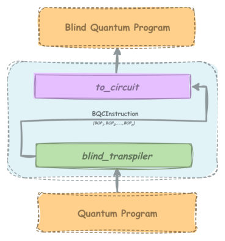
<figcaption class="paper-figure-caption"><b>Fig 2.</b> Fig. 1 shows the overview of the library functionality. The library performs this blind transpilation by taking a quantum circuit written in Qiskit as input and generat- ing an object of BQCInstruction class as output. This is an internal class of the library which intrinsically encodes a list of modified gate objects, called a blind operation (BOP). This BOP object contains the definition of the gate along with the additional information about its del- egation and classical control. The BQCInstruction object can be directly probed to provide inference about the delegation process, like the actual number of communication rounds, client and</figcaption>
</figure>
<figure class="paper-figure-card">
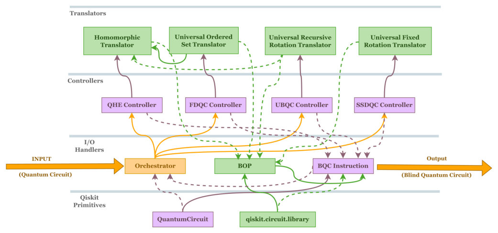
<figcaption class="paper-figure-caption"><b>Fig 3.</b> Figure 2: The UML-like relationship between library modules along with their layered architecture. Note that the layered hierarchy enables the library’s modularity, reusability, and scalability to new protocols of blindness. The dotted lines show an indirect relationship between the modules and classes.</figcaption>
</figure>
<figure class="paper-figure-card">
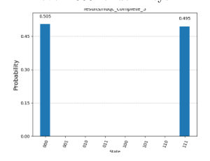
<figcaption class="paper-figure-caption"><b>Fig 4.</b> Figure 3: The comparison of the output of the original and the blind transpiled circuit for the circuit that creates the GHZ state. The transpilation has been performed as qhe format, and results are shown as averaged over the 1000 randomly sampled keys.</figcaption>
</figure>
<figure class="paper-figure-card">
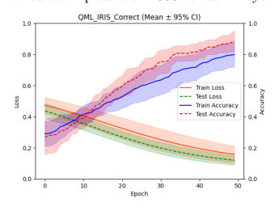
<figcaption class="paper-figure-caption"><b>Fig 5.</b> Figure 4: The comparison of the output of the original and the blind transpiled circuit. (a) shows the original parametric circuit used, (b) shows its desired output, (c) shows the output if the decryption is not performed, and (d) shows the output if the correct decryption has been performed. Note, the transpilation has been performed as qhe format, and results are shown as averaged over the 1000 randomly sampled keys.</figcaption>
</figure>
</div>

<p><strong>Summary.</strong> This paper introduces 'Blind Transpiler,' an open-source library designed to solve the lack of tools for prototyping Blind Quantum Computation (BQC). It works by transpiling standard quantum circuits into secure, blind instruction sets suitable for delegation between a client and a remote server. This enables practical testing of advanced cryptographic applications like secure machine learning in quantum settings.</p>
<p><strong>Why it may be interesting.</strong> While not directly about AMO physics, the underlying concepts of secure computation and resource management are highly relevant to quantum networking and distributed quantum computing architectures where trust boundaries must be strictly enforced.</p>
<details>
<summary>Detailed structure</summary>
<p><strong>Main problem.</strong> The primary problem addressed is the lack of software tools for rapidly prototyping Blind Quantum Computation (BQC) protocols, which hinders academic investigation into secure quantum computation.</p>
<p><strong>Main result.</strong> The authors developed 'Blind Transpiler,' an open-source library that successfully transpiles standard Qiskit circuits into their blind counterparts suitable for client-server delegation.</p>
<p><strong>Method.</strong> The method involves a modular, layered architecture where the library translates general quantum circuits into specific Blind Operation (BOP) instructions tailored for different BQC primitives like Quantum Homomorphic Encryption (QHE) and Universal Blind Quantum Computation (UBQC).</p>
<p><strong>Model / system.</strong> The focus is on abstract quantum computation protocols rather than a physical hardware realization. The model involves simulating the delegation of circuits from a client to a remote server, assuming only basic gates are available locally.</p>
<p><strong>Key observables.</strong> Key observables include the resulting <code>BQCInstruction</code> object, which encodes the list of Blind Operations (BOPs), and metrics like the number of client/server gates and communication rounds.</p>
<p><strong>Important parameters / regimes.</strong> The library supports various protocols including QHE, UBQC, FDQC, and SSDQC. Key parameters involve key sizes for cryptographic security and approximations needed for non-parametric gates (e.g., Solovay-Kitaev decomposition).</p>
<p><strong>Assumptions / limitations.</strong> It is assumed that the client side only has access to basic gates ($\{X, Z, 	ext{Swap}, 	ext{Measure}\}$), while complex operations are delegated to the server. Parametric gates often require approximation.</p>
<p><strong>Figures summary.</strong> Figures illustrate the library flow: Input Qiskit circuit $
ightarrow$ BQCInstruction object (BOPs) $
ightarrow$ Blind Circuit. Examples show successful blind classification on the IRIS dataset, contrasting correct vs. incorrect decryption outcomes.</p>
<p><strong>Paper structure.</strong> The paper introduces the problem gap, details the modular, layered architecture of the 'Blind Transpiler' library, describes the transpilation process for various BQC primitives (QHE, UBQC), demonstrates its application via a blind variational classifier on IRIS, and concludes with software availability information.</p>
</details>
<details>
<summary>Abstract</summary>
<p>Blind quantum computation is a cryptographic primitive that allows a limited-capability client to delegate its complex computation to a remote server without revealing its data and/or computation. This branch of quantum cryptography has been bifurcated into two distinct primitives, quantum homomorphic encryption (concerning the security of only data) and universal blind quantum computation (concerning the security of data and the computing algorithm). These primitives have immense applicability in problems like secure cloud computing, secure quantum variational algorithms, quantum federated learning, and secure multiparty computation. However, no software tools exist for the rapid prototyping of such protocols, hindering the academic interrogation for potential applications. In this paper, we describe the development of the first such library for transpiling circuits written in Qiskit to its blind counterpart, which can then be delegated in a client-server architecture without revealing the client's data and/or computation. The proposed library is designed in modular and reusable component layers, enabling easier scalability to newer BQC primitives and robustness against changes in underlying primitives. We show the implementation of these primitives to a blind variational quantum classifier for the IRIS dataset.</p>
</details>
<p><sub><a href="#top">↑ back to top</a></sub></p>

<p><a id="paper-2607.18071"></a></p>
<h3 id="dftuv-is-equivalent-to-dftu-with-density-dependent-hybridized-projectors"><a href="http://arxiv.org/abs/2607.18071v1">DFT+U+V is equivalent to DFT+U with density-dependent hybridized projectors</a></h3>
<p><strong>Authors:</strong> Edward Linscott, Alberto Carta, Nicola Marzari<br>
<strong>Type:</strong> theory · <strong>Category:</strong> strongly correlated electrons · <strong>PDF:</strong> <a href="https://arxiv.org/pdf/2607.18071v1">https://arxiv.org/pdf/2607.18071v1</a><br>
<strong>Analysis basis:</strong> full PDF text, analyzed in chunks
<strong>Topic relevance:</strong> <code>Keldysh / 2PI / non-Gaussian methods</code> <strong>1/5</strong> · <code>Kondo &amp; dissipative impurity</code> <strong>1/5</strong> · <code>analog quantum simulation</code> <strong>1/5</strong></p>
<div class="figure-strip-hint">↔ Scroll figures horizontally</div>
<div class="paper-figures-scroll">
<figure class="paper-figure-card">
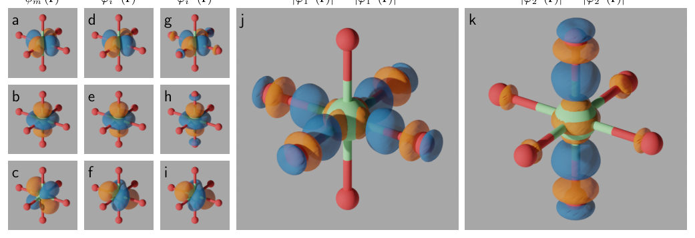
<figcaption class="paper-figure-caption"><b>Fig 1.</b> FIG. 1. The original ϕIσ m (r), block-diagonalizing φIσ i (r), and doubly hybridized Hubbard projectors ˜φIσ i (r) = e2 ˆ SφIσ i (r) of nickel in antiferromagnetic NiO for the minority spin channel. For simplicity, only one nickel atom (green) and its nearest- neighbor oxygen atoms (red) are shown. The left column (a–c) shows three of the five original Hubbard projectors, defined as orthogonalized hydrogenic orbitals oriented with the Cartesian axes. (The crystal structure happens to align with the Cartesian directions, but in general the orientation of these orbitals is arbitrary.) The second column (d–f) shows the block-diagonalizing projectors |φIσ i ⟩, i.e. the eigenvectors of nII;...</figcaption>
</figure>
<figure class="paper-figure-card">
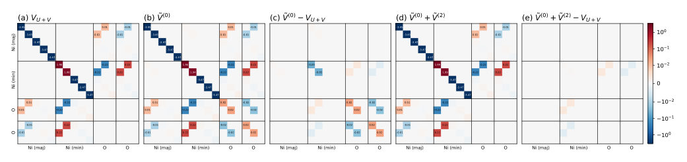
<figcaption class="paper-figure-caption"><b>Fig 2.</b> FIG. 2. The frozen-projector approximation reproduces the exact DFT+U +V potential in bulk antiferromagnetic nickel oxide to within a small residual (panels a–c), which can be almost entirely accounted for by a single analytic second-order term (panels d, e). Each panel shows the matrix elements of various potentials in the basis of block-diagonalizing orbitals {φIσ i } evaluated at the Γ-point. The matrices are subdivided by Hubbard site; one can clearly see the five d orbitals of each Ni and the three p orbitals of each O. (The unit cell contains four atoms: two Ni and two O.) Panel (a) shows the matrix elements of the full (i.e. exact) DFT+U +V potential ⟨φIσ i | ˆVU + ˆVV |φJσ j ⟩. The...</figcaption>
</figure>
</div>

<p><strong>Summary.</strong> This work mathematically proves that the inter-site $+V$ correction in $   ext{DFT}+U+V$ can be understood as an effective modification of the on-site Hubbard interaction ($+U$). This equivalence holds when using density-dependent, hybridized projectors, providing crucial physical insight into how electron correlation and covalency interact in strongly correlated materials.</p>
<p><strong>Why it may be interesting.</strong> While focused on solid-state physics, understanding how an effective Hamiltonian (like DFT+$U$) can be rigorously mapped onto a more complex correlated model ($    ext{DFT}+U+V$) using projection techniques is highly relevant for developing accurate many-body Hamiltonians in quantum simulation.</p>
<details>
<summary>Detailed structure</summary>
<p><strong>Main problem.</strong> The authors aim to provide a formal justification for inter-site $+V$ corrections added to DFT+$U$, which are necessary because standard $   ext{DFT}+U$ over-localizes charge and breaks covalent bonds.</p>
<p><strong>Main result.</strong> To first order in $V/U$, the full $ ext{DFT}+U+V$ potential is shown to be exactly equivalent to an on-site $   ext{DFT}+U$ calculation performed using density-dependent, hybridized Hubbard projectors.</p>
<p><strong>Method.</strong> The equivalence is demonstrated by defining a specific anti-Hermitian generator ($\hat{S}$) that relates the energy calculated with hybridized projectors to the full $  ext{DFT}+U+V$ energy in a perturbative expansion.</p>
<p><strong>Model / system.</strong> The study applies to materials containing localized $d$ or $f$ electrons, such as transition metal oxides (e.g., NiO). The theoretical framework involves extending standard DFT+$U$ with an inter-site potential term ($\hat{V}$).</p>
<p><strong>Key observables.</strong> Potential matrix elements comparing $  ext{DFT}+U+V$ to approximations using hybridized projectors; the degree of covalency enhancement.</p>
<p><strong>Important parameters / regimes.</strong> $U$ (Hubbard parameter), $V$ (inter-site correction strength); the perturbative limit $V/U \ll 1$.</p>
<p><strong>Assumptions / limitations.</strong> The equivalence is rigorously proven only to first order in $V/U$; using frozen projectors, a common practice, causes the formal equivalence to break down.</p>
<p><strong>Figures summary.</strong> Figure 1 illustrates the evolution of Hubbard projectors (original vs. hybridized) for NiO, showing how hybridization incorporates neighboring orbital weights. Other figures compare potential matrix elements across different approximations and k-points.</p>
<p><strong>Paper structure.</strong> The paper develops the equivalence by first establishing the formal relationship using a continuous parameter $\alpha$, then demonstrating that frozen projector approaches fail to reproduce the full potential, ultimately confirming the validity of the hybridized projector approach to first order in $V/U$.</p>
</details>
<details>
<summary>Abstract</summary>
<p>Hubbard-corrected density-functional theory (DFT+$U$) is a popular tool for first-principles modeling of materials with localized $d$ or $f$ electrons, but its on-site corrections tend to over-localize charge and break covalent bonds. Inter-site $+V$ corrections were introduced to counter this and are now widely used, but a formal justification has been lacking. Here we show that -- to first order in $V/U$ -- inter-site corrections are exactly equivalent to on-site DFT+$U$ evaluated on a density-dependent redefinition of the Hubbard projectors, hybridized with those of neighboring sites, providing insight into the explicit mechanism by which $V$ affects covalency. If the projectors are held frozen, as is common practice, the equivalence partially breaks down. Beyond reinterpreting the formalism, these results sharpen the questions of how $V$ should be computed and what the Hubbard subspaces fundamentally are.</p>
</details>
<p><sub><a href="#top">↑ back to top</a></sub></p>

<p><a id="paper-2607.17714"></a></p>
<h3 id="formal-verification-of-continuous-variable-quantum-programs"><a href="http://arxiv.org/abs/2607.17714v1">Formal Verification of Continuous-Variable Quantum Programs</a></h3>
<p><strong>Authors:</strong> Stefanie Muroya, Thomas A. Henzinger<br>
<strong>Type:</strong> theory · <strong>Category:</strong> quantum information and computing · <strong>PDF:</strong> <a href="https://arxiv.org/pdf/2607.17714v1">https://arxiv.org/pdf/2607.17714v1</a><br>
<strong>Analysis basis:</strong> full PDF text, analyzed in chunks
<strong>Topic relevance:</strong> <code>analog quantum simulation</code> <strong>1/5</strong> · <code>methods for driven-dissipative</code> <strong>1/5</strong> · <code>quantum measurements</code> <strong>1/5</strong></p>
<div class="figure-strip-hint">↔ Scroll figures horizontally</div>
<div class="paper-figures-scroll">
<figure class="paper-figure-card">
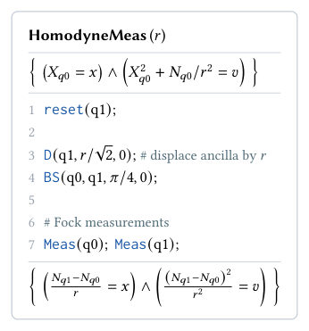
<figcaption class="paper-figure-caption"><b>Fig 1.</b> Fig. 8. Hoare triple for the program HomodyneMeas(𝑟) that measures the position of 𝑞0 via Fock measure- ments using an ancilla 𝑞1. The weakest precondition characterizes both the expected position and its variance. While the expectation is exact for every displacement 𝑟, the quadratic observable reveals an additional single-shot noise term that decreases as 1/𝑟2.</figcaption>
</figure>
<figure class="paper-figure-card">
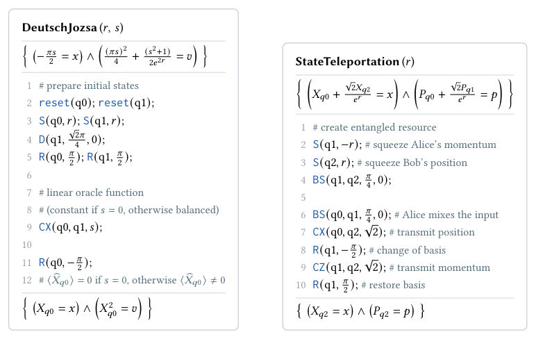
<figcaption class="paper-figure-caption"><b>Fig 2.</b> Fig. 9. (a) Hoare triple for the continuous-variable Deutsch–Jozsa program DeutschJozsa (r, s), with squeez- ing parameter 𝑟, oracle slope 𝑠, query mode 𝑞0, and ancilla 𝑞1. The derived weakest precondition proves that the expected position of the query mode is −𝜋𝑠/2, distinguishing constant (𝑠= 0) from balanced (𝑠≠0) linear oracles. The quadratic observable additionally quantifies the finite-squeezing noise, which decreases exponentially with the squeezing parameter 𝑟. (b) Hoare triple for the state teleportation program StateTeleportation (𝑞0: input, 𝑞1: Alice, 𝑞2: Bob). The derived weakest precondition certifies that the input quadratures are teleported exactly onto Bob’s mode 𝑞2 in the...</figcaption>
</figure>
<figure class="paper-figure-card">
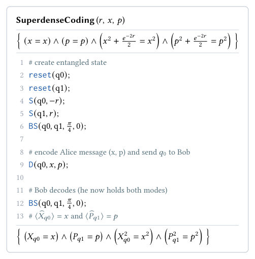
<figcaption class="paper-figure-caption"><b>Fig 3.</b> Fig. 10. Hoare triple for the SuperdenseCoding(𝑟,𝑥, 𝑝) program, with squeezing parameter 𝑟, and two real numbers (x, p) that correspond to the message that Alice (𝑞0) wants to send to Bob (𝑞1). The derived weakest precondition proves that Bob recovers the encoded position and momentum values while quantifying the finite-squeezing variance, which decreases as 𝑒−2𝑟/2.</figcaption>
</figure>
</div>

<p><strong>Summary.</strong> This paper introduces a novel formal semantics and the first Hoare logic specifically designed for Continuous-Variable Quantum Computing (CQC). By restricting state spaces and using polynomial assertions, the authors overcome mathematical obstacles related to infinite dimensions. The resulting tool allows rigorous verification of CQC algorithms and quantifies the resources needed for classical simulation.</p>
<p><strong>Why it may be interesting.</strong> This work provides the necessary mathematical rigor—a verifiable programming model—for advancing quantum computation theory beyond discrete qubits into continuous variable systems relevant for modern photonic hardware.</p>
<details>
<summary>Detailed structure</summary>
<p><strong>Main problem.</strong> The primary goal is to establish a formal semantics and develop the first Hoare logic for Continuous-Variable Quantum Computing (CQC). This addresses the technical challenges posed by infinite-dimensional Hilbert spaces and unbounded measurement outcomes inherent to CQC.</p>
<p><strong>Main result.</strong> The authors successfully provide a sound and relatively complete Hoare logic for CQC, along with a symbolic weakest-precondition calculator. This tool has been shown to verify textbook CQC algorithms and compute resource requirements for classical simulation.</p>
<p><strong>Method.</strong> They overcome technical hurdles by restricting the state space to the Schwartz subspace and basing assertions on finite polynomials over canonical observables (position and momentum). The logic interprets implication as the subset relation on sets of quantum states.</p>
<p><strong>Model / system.</strong> The model is Continuous-Variable Quantum Computing (CQC), which operates on qumodes described by infinite-dimensional Hilbert spaces. Key components include canonical observables ($X, P$) and the use of Schwartz density operators to ensure convergence for expected values.</p>
<p><strong>Key observables.</strong> Canonical observables ($\hat{b}_X, \hat{b}_P$), polynomial assertions built from these observables, and the number operator ($\hat{N}_{q0}$).</p>
<p><strong>Important parameters / regimes.</strong> The accuracy of classical simulation is bounded using the Chebyshev-Cantelli inequality, which determines the required truncation dimension based on desired error bounds.</p>
<p><strong>Assumptions / limitations.</strong> The framework assumes that CQC programs are straight-line (no loops or conditionals) and restricts analysis to states within the Schwartz subspace to ensure mathematical tractability.</p>
<p><strong>Figures summary.</strong> Figure 11 illustrates the weakest precondition derived for the number operator under various single-mode instructions, alongside the Chebyshev-Cantelli inequality used to bound simulation accuracy. Table 1 lists verified gate decompositions.</p>
<p><strong>Paper structure.</strong> The paper develops a formal semantics by defining the logic's components (state space restriction, assertion language) and then implements a symbolic calculator to derive weakest preconditions for various CQC operations, culminating in verification examples and resource estimation.</p>
</details>
<details>
<summary>Abstract</summary>
<p>We provide a formal framework for Continuous-Variable Quantum Computing (CQC). While CQC is supported by photonic quantum hardware, we are not aware of a formal semantics for continuous-variable quantum programs nor of a unary Hoare logic for their verification. There are several technical obstacles to extending to CQC any of the formal frameworks available for Discrete-Variable Quantum Computing (DQC). Most importantly, continuous-variable quantum programs act on {\em infinite-dimensional} Hilbert spaces; their measurement outcomes are often {\em unbounded} and have expected values that are defined by an improper integral (or an infinite series), which may not converge. We overcome these challenges to give a formal semantics to a universal programming language for CQC and to provide the first Hoare logic for CQC. The assertions of our logic are built from polynomials over canonical observables. Besides proving relative completeness, we implement a symbolic weakest-precondition calculator for CQC based on our logic. Our tool has successfully verified CQC algorithms from textbooks and calculated their approximation errors for physically realizable implementations, proved the correctness (i.e., equivalence) of gate decompositions for CQC hardware, and computed the resource requirements (i.e., number of photon-number states) for achieving a desired accuracy in the classical simulation of continuous-variable quantum programs.</p>
</details>
<p><sub><a href="#top">↑ back to top</a></sub></p>

<p><a id="paper-2607.17793"></a></p>
<h3 id="geometry-resolved-projection-of-rf-imbalance-to-ion-micromotion-in-a-same-phase-dual-rf-blade-trap"><a href="http://arxiv.org/abs/2607.17793v1">Geometry-Resolved Projection of RF Imbalance to Ion Micromotion in a Same-Phase Dual-RF Blade Trap</a></h3>
<p><strong>Authors:</strong> Chun-Yang Luan, Haiyu Ding, Cheng-Kang Pan, Xiangjie Li, Lin Cheng, Gangxi Wang, Yuting Lei, Peilin Zheng, Shixin Hu, Xiang Zhang, Fei Wang<br>
<strong>Type:</strong> theory · <strong>Category:</strong> other · <strong>PDF:</strong> <a href="https://arxiv.org/pdf/2607.17793v1">https://arxiv.org/pdf/2607.17793v1</a><br>
<strong>Analysis basis:</strong> full PDF text, analyzed in chunks
<strong>Topic relevance:</strong> <code>QC/QI experiment</code> <strong>1/5</strong> · <code>methods for driven-dissipative</code> <strong>1/5</strong> · <code>quantum measurements</code> <strong>1/5</strong></p>
<div class="figure-strip-hint">↔ Scroll figures horizontally</div>
<div class="paper-figures-scroll">
<figure class="paper-figure-card">
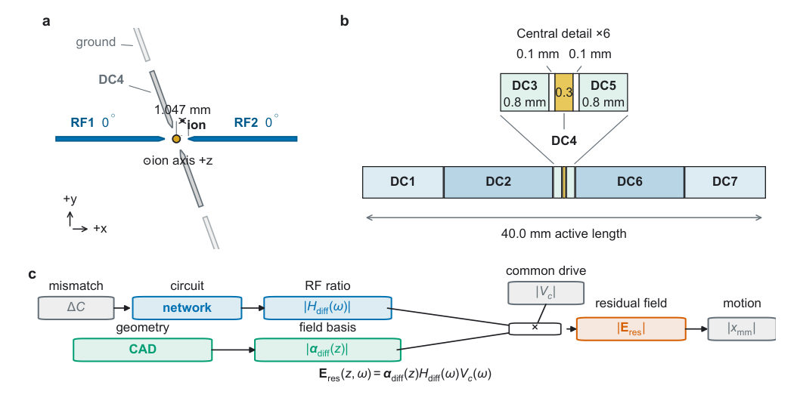
<figcaption class="paper-figure-caption"><b>Fig 1.</b> Fig. 1. Device geometry and RF-to-ion factorization. (a) CAD-derived orthographic section through the trap center; the RF-tip-to-ion distance is read directly from the STEP assembly. (b) Seven-segment DC blade drawn to the stated axial lengths, with DC3–DC5 enlarged at a common scale. (c) Parallel electrical and geometric branches: ∆C enters the circuit model to determine Hdiff, whereas the CAD geometry determines αdiff. Their product with Vc gives Eres(z, ω) = αdiff(z)Hdiff(ω)Vc(ω) and xmm = e|Eres|/(mΩ2 RF).</figcaption>
</figure>
<figure class="paper-figure-card">
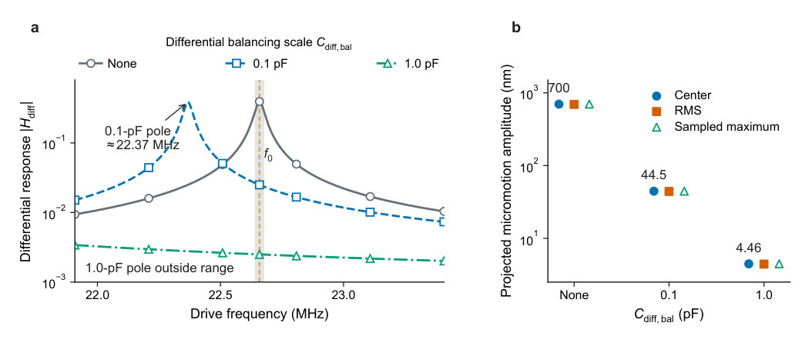
<figcaption class="paper-figure-caption"><b>Fig 2.</b> Fig. 2. Electrical imbalance and projected ion motion for ∆C = 10 fF and Vc = 100 V peak. (a) Compact-model differential response evaluated at the common reference f0 = 22.658 38 MHz. The gray band spans f0 ± f0/(2QL) for QL = 600, and the arrow identifies the 0.1 pF differential pole near 22.37 MHz. (b) Center, axial RMS, and sampled-maximum projected micromotion amplitudes evaluated at the same f0; only center values are annotated.</figcaption>
</figure>
<figure class="paper-figure-card">
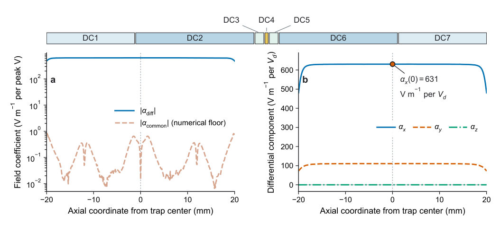
<figcaption class="paper-figure-caption"><b>Fig 3.</b> Fig. 3. Geometry-resolved field basis along the 40 mm nominal ion axis. RF1-only and RF2-only Cartesian fields were evaluated directly from the COMSOL saved solutions at 401 positions with 0.1 mm spacing; common and differential vectors and their norms were then reconstructed pointwise. No postprocessing smoothing was applied. The top bar shows the DC1–DC7 positions. (a) Differential and common coefficient norms; the pale near-zero common trace is retained as the raw numerical basis-cancellation floor, not as resolved physical structure. (b) Cartesian components of the differential basis. The center marker identifies the dominant center component reported in Eq. (7); the micromotion...</figcaption>
</figure>
</div>

<p><strong>Summary.</strong> This paper develops a sophisticated model to calculate the residual micromotion experienced by trapped ions due to imperfections in the trap's RF driving fields. By combining circuit theory with finite-element simulations, the authors provide a geometry-resolved projection that quantifies how small capacitance mismatches translate into measurable ion motion. This is vital for achieving high-precision quantum operations in trapped-ion quantum computing architectures.</p>
<p><strong>Why it may be interesting.</strong> This work provides a crucial theoretical tool for experimentalists working with trapped ions, moving beyond simple resonator characterization to predict systematic errors arising from electrode geometry and RF imbalance.</p>
<details>
<summary>Detailed structure</summary>
<p><strong>Main problem.</strong> The study addresses how residual RF field imbalances, which are not captured by common-mode metrics, project onto measurable micromotion of trapped ions in a dual-RF blade trap.</p>
<p><strong>Main result.</strong> The authors successfully developed a geometry-resolved projection method showing that even small capacitance mismatches (fF scale) can lead to tens of nanometers of projected ion micromotion.</p>
<p><strong>Method.</strong> The methodology combines a two-node differential RF circuit model with single-electrode finite-element simulations to factorize the error source into geometric and electrical components.</p>
<p><strong>Model / system.</strong> The physical system is a trapped ion setup utilizing a same-phase dual-RF blade trap geometry. The analysis models the coupling between the RF driving fields, electrode capacitances, and the resulting force on the trapped ion.</p>
<p><strong>Key observables.</strong> Projected micromotion amplitude (nm), differential field coefficients ($   ext{V m}^{-1}$ per $V_d$), and effective differential capacitance scale ($C_{	ext{diff,bal}}$).</p>
<p><strong>Important parameters / regimes.</strong> Capacitance mismatch ($\Delta C$, e.g., 10 fF), loaded quality factor ($Q_{\mathrm{loaded}}=600$), and common peak voltage (e.g., 100 V).</p>
<p><strong>Assumptions / limitations.</strong> All reported displacements are projections based on the model; no direct RF-bench or ion-side validation is claimed.</p>
<p><strong>Figures summary.</strong> Figures illustrate the factorization of the RF-to-ion mapping ($   ext{Eres} = \alpha_{    ext{diff}} H_{  ext{diff}} V_c$) and quantify how a specific capacitance mismatch translates into measurable micromotion, comparing balanced vs. unbalanced scenarios.</p>
<p><strong>Paper structure.</strong> The paper establishes that common metrics are insufficient, develops the combined circuit/geometry model to factorize the error source, calculates key coefficients ($\alpha_{	ext{diff}}, H_{	ext{diff}}$), and then applies this framework to quantify micromotion for representative mismatch values. Supplementary sections analyze thermal and DC bypass sensitivities.</p>
</details>
<details>
<summary>Abstract</summary>
<p>Common-mode metrics of a high-$Q$ helical resonator do not determine the residual ion-side field in a dual-electrode drive. We combine a two-node differential RF model with single-electrode finite-element bases to obtain a computation-only, geometry-resolved projection for a same-phase blade trap. For a 3.5 pF external load per branch, the model gives a total effective branch capacitance of 7.640 pF and an HWHM-equivalent full branch-difference scale of 12.7 fF at $Q_{\mathrm{loaded}}=600$. The seven-segment geometry gives center and axial-RMS differential field coefficients of 640 V m$^{-1}$ and 635 V m$^{-1}$ per differential peak volt. A representative 10 fF mismatch with an effective 0.1 pF balance scale projects to 44.5/44.1 nm center/RMS $^{171}\mathrm{Yb}^{+}$ micromotion at 100 V common peak voltage. Supplementary thermal, bypass-admittance, and tested numerical cases characterize model sensitivity. All reported displacements are projections; no RF-bench or ion-side validation is claimed.</p>
</details>
<p><sub><a href="#top">↑ back to top</a></sub></p>

<p><a id="paper-2607.16445"></a></p>
<h3 id="nanowire-networks-interconnection-graphs-from-their-photomicrographs"><a href="http://arxiv.org/abs/2607.16445v1">Nanowire networks' interconnection graphs from their photomicrographs</a></h3>
<p><strong>Authors:</strong> Javier Tau Anzoátegui, Juan Ignacio Diaz Schneider, Eduardo D. Martínez, Pablo Levy, Oscar Filevich, Cynthia P. Quinteros<br>
<strong>Type:</strong> both · <strong>Category:</strong> disordered systems and neural networks · <strong>PDF:</strong> <a href="https://arxiv.org/pdf/2607.16445v1">https://arxiv.org/pdf/2607.16445v1</a><br>
<strong>Analysis basis:</strong> full PDF text, analyzed in chunks
<strong>Topic relevance:</strong> <code>analog quantum simulation</code> <strong>1/5</strong> · <code>methods for driven-dissipative</code> <strong>1/5</strong> · <code>non-equilibrium dynamics</code> <strong>1/5</strong></p>
<div class="figure-strip-hint">↔ Scroll figures horizontally</div>
<div class="paper-figures-scroll">
<figure class="paper-figure-card">
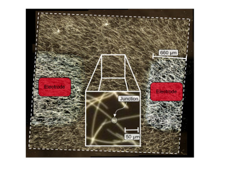
<figcaption class="paper-figure-caption"><b>Fig 1.</b> Figure 1: Infograph of a typical nanowire network (NWN) depicting the constituent units. Each NWN comprises the network of nanowires (NWs) intersecting each other, enclosed by two macro- scopic electrodes placed 1 mm apart. A zoomed-in area is included as an inset where individual NWs and their junctions can be spotted. The image represents the so-called active area, which does not cover the full substrate surface but is a laterally delimited zone containing the NWN and the elec- trodes.</figcaption>
</figure>
<figure class="paper-figure-card">
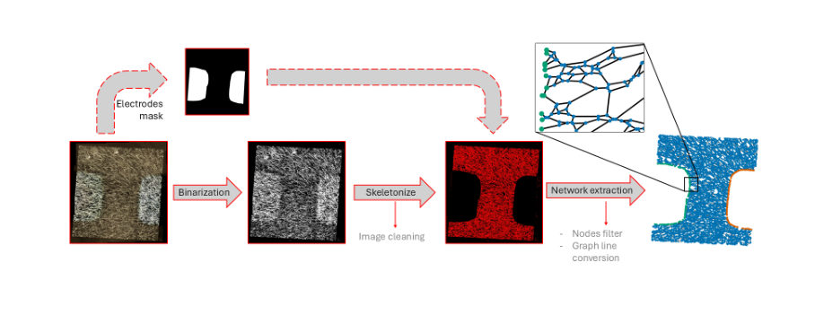
<figcaption class="paper-figure-caption"><b>Fig 2.</b> Figure 2: Sketch of the pipeline flow. Starting from the stitched picture, the procedure identifies the electrodes and binarizes the RGB-format image to facilitate the skeletonization conversion. Once the network has been converted to a set of one-pixel-wide contours, network extraction is performed. The wires and their mutual intersections (zenithal view) are interpreted as a graph comprised of nodes and edges, respectively, depicted in the zoomed-in area.</figcaption>
</figure>
<figure class="paper-figure-card">
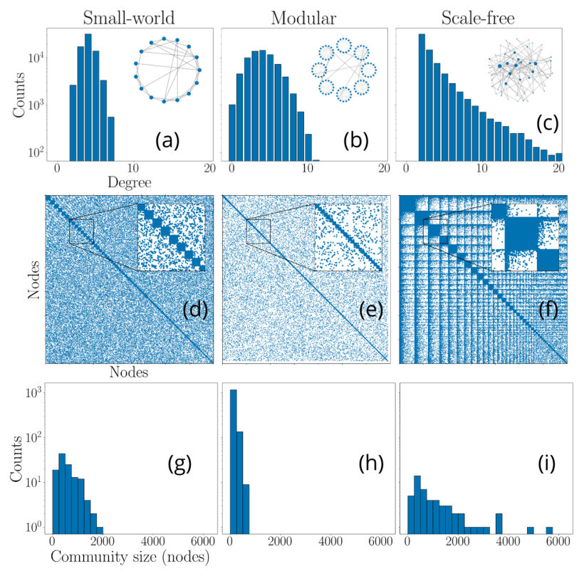
<figcaption class="paper-figure-caption"><b>Fig 3.</b> Figure 3: Different network schemes used as a reference: small-world, modular, and scale- free. The top row, (a), (b), and (c), comprises a degree histogram including an inset with sketches of a moderate size to help visualization. On the second row, (d), (e), and (f) show the adjacency matrix, while the bottom row, (g), (h), and (i), displays the distribution of community sizes for each case. Degree distributions, adjacency matrices, and their associated community size distributions are calculated for networks of a size and average degree comparable to the experimental realizations (N = 70000, k = 4).</figcaption>
</figure>
<figure class="paper-figure-card">
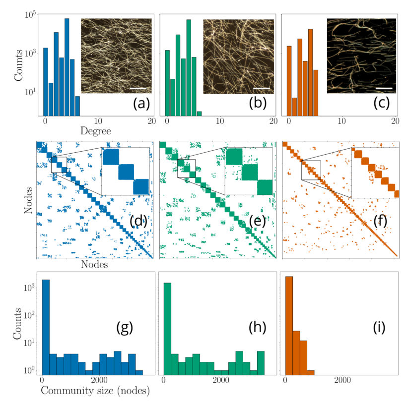
<figcaption class="paper-figure-caption"><b>Fig 4.</b> Figure 4: Network metrics of graphs generated from experimental images. Degree distribu- tions with optical images as insets with a scale bar of 100 µm ((a), (b), and (c)), adjacency matrices ((d), (e), and (f)), and community distributions ((g), (h), and (i)) for three experimental cases (sam- ples A, B, and C, respectively).</figcaption>
</figure>
<figure class="paper-figure-card">

<figcaption class="paper-figure-caption"><b>Fig 5.</b> Fig. 4 depicts the degree distribution and adjacency matrix obtained from three different samples: A, B, and C. Those labeled as A and B have the same nominal areal density, while C is smaller. This difference is noticeable in Figs. 4(a), (b), and (c) insets. Comparison of the obtained graph characteristics corresponding to the experimental samples allows for identifying a moderate range of available connectivity degrees, which is compatible with small-world-like schemes. However, adja- cency matrices show a modular arrangement as indicated by the presence and sustainable size of the squares forming around the matrices’ diagonals. Additionally, the spots appreciated outside the diagonal...</figcaption>
</figure>
</div>

<p><strong>Summary.</strong> This work develops a computational pipeline to convert optical images of nanowire networks into mathematical graphs. By analyzing topological metrics like clustering and path length, the authors show that these experimental assemblies exhibit characteristics resembling small-world and modular networks. This bridges the gap between physical device characterization and theoretical network modeling.</p>
<p><strong>Why it may be interesting.</strong> While focused on condensed matter devices, the methodology—translating complex physical connectivity into a quantifiable graph structure for topological analysis—is highly relevant to modeling quantum network architectures or disordered superconducting circuits where connectivity is key.</p>
<details>
<summary>Detailed structure</summary>
<p><strong>Main problem.</strong> The study aims to extract the interconnection graph from photomicrographs of nanowire networks (AgNWNs) to analyze their network architecture for use in simulation platforms.</p>
<p><strong>Main result.</strong> Experimental assemblies exhibit topological similarities to both small-world and modular structures, suggesting complex connectivity patterns beyond simple random models.</p>
<p><strong>Method.</strong> A pipeline is developed using image processing techniques (binarization, skeletonization) to translate physical nanowire intersections into a graph structure for subsequent topological analysis.</p>
<p><strong>Model / system.</strong> The system under study is Silver Nanowire Networks (AgNWNs), which are self-assembled structures studied for their signal-processing capabilities, mimicking neuromorphic elements. The connectivity is modeled mathematically as a graph composed of nodes (segments) and edges (intersections).</p>
<p><strong>Key observables.</strong> Degree distribution, clustering coefficient (CC), path length (PL), community size, and the number of nodes (N) and edges (e).</p>
<p><strong>Important parameters / regimes.</strong> Edge removal probability (per), which is used to account for spurious junctions observed in zenithal-view optical images.</p>
<p><strong>Assumptions / limitations.</strong> The primary limitation is that the zenithal view overestimates interconnections by failing to distinguish true physical junctions from mere overlaps between vertically displaced nanowires.</p>
<p><strong>Figures summary.</strong> Figure 1 illustrates a typical AgNWN structure, and Figure 2 summarizes the graph generation pipeline flow (electrode identification $
ightarrow$ binarization $
ightarrow$ skeletonization $
ightarrow$ network extraction).</p>
<p><strong>Paper structure.</strong> The paper details the development of an image processing pipeline to generate graphs from NW photomicrographs. It then applies standard network science metrics (CC, PL) and compares the resulting topology against known archetypes (small-world, modular), while also analyzing the impact of junction removal.</p>
</details>
<details>
<summary>Abstract</summary>
<p>Self-assemblies of tunable units are being intensively studied as physical systems with signal-processing capabilities. Specifically, silver nanowire networks (AgNWNs) have demonstrated accumulation, non-linearity, and memory retention with multiple timescales, features that enable a wide variety of neuromorphic implementations. In this study, we aim to extract the interconnection scheme to analyze the experimentally obtained network architecture and, eventually, use it as input to a previously developed simulation platform. By post-processing photomicrographs of AgNWN, we present a pipeline optimized to extract the interconnection diagram, recognizing the intersections formed among the nanowires, to determine the associated graph for each physical sample. A graph is a collection of nodes and edges whose properties can be associated with different electrical responses. It is thus possible to study graphs' metrics, such as the degree distribution, community size, clustering coefficient, and path-length, to compare the experimental assemblies' attributes to those of topological models of reference. Small-world, modular, and scale-free are well-known structures in the field of mathematical graphs. By analyzing the degree distribution, the adjacency matrices, among other useful representation means, the experimental assemblies reveal similarities to both small-world and modular topologies. All the mentioned analyses were conducted considering the interconnection scheme obtained from zenithal-view optical images, which overestimates the number of NWs' interconnections (due to the impossibility of distinguishing real junctions from spurious cross-points between vertically displaced NWs). For that reason, this communication also studies the impact of artificially removing junctions from the resulting graphs on the previously calculated clustering coefficient and path length.</p>
</details>
<p><sub><a href="#top">↑ back to top</a></sub></p>

<p><a id="paper-2607.18015"></a></p>
<h3 id="phonon-dynamics-in-chromium-under-pressure-absence-of-phonon-criticality-at-the-approach-of-the-quantum-critical-point"><a href="http://arxiv.org/abs/2607.18015v1">Phonon dynamics in Chromium under pressure: absence of phonon criticality at the approach of the quantum critical point</a></h3>
<p><strong>Authors:</strong> P. Rodière, J. E. Lorenzo, Q. N. Meier, L. Paolasini, A. Bosak<br>
<strong>Type:</strong> both · <strong>Category:</strong> strongly correlated electrons · <strong>PDF:</strong> <a href="https://arxiv.org/pdf/2607.18015v1">https://arxiv.org/pdf/2607.18015v1</a><br>
<strong>Analysis basis:</strong> full PDF text, analyzed in chunks
<strong>Topic relevance:</strong> <code>Keldysh / 2PI / non-Gaussian methods</code> <strong>1/5</strong> · <code>analog quantum simulation</code> <strong>1/5</strong> · <code>spintronics-quantum-optics interface</code> <strong>1/5</strong></p>
<div class="figure-strip-hint">↔ Scroll figures horizontally</div>
<div class="paper-figures-scroll">
<figure class="paper-figure-card">
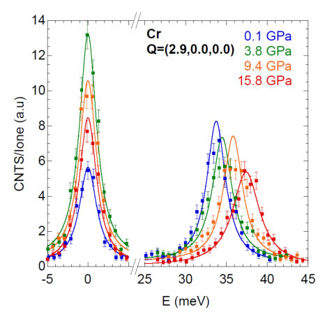
<figcaption class="paper-figure-caption"><b>Fig 1.</b> FIG. 1. Pressure dependence of the longitudinal acoustic phonon mode at 0.9Γ-H for Q=(2.9,0,0). Each point is the number of photon detected on an acquisition time of 2 min- utes/point normalized by the incident flux. Solid curves are a fit of the data.</figcaption>
</figure>
<figure class="paper-figure-card">
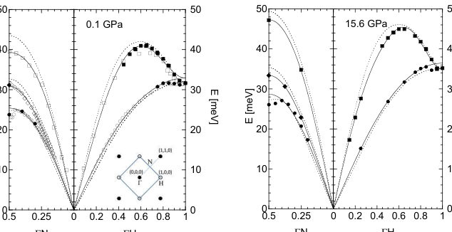
<figcaption class="paper-figure-caption"><b>Fig 2.</b> FIG. 2. Phonon spectra of the Cr along the two main Brillouin Zone directions ΓH and ΓN at 0.1 GPa (left) and at 15.6 GPa (right). The open symbols are published neutron data from Ref. 9, closed symbols are from this work. The solid line are the fit based on the Born-von K`arm`an calculation. The dotted line are the ab-initio calculation. The inset of the left panel is the representation of the first Brillouin Zone of a BCC crystal. The black circles are the Bragg peaks, and open are the forbidden reflections.</figcaption>
</figure>
<figure class="paper-figure-card">
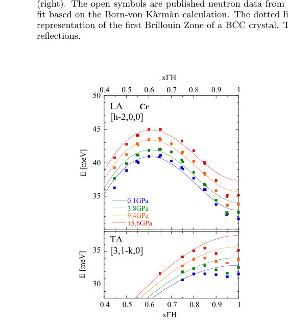
<figcaption class="paper-figure-caption"><b>Fig 3.</b> FIG. 3. Pressure dependence of the phonon dispersion of the LA (top) and TA (bottom) modes along the ΓH−direction. The lines are the calculated dispersion curves with the force constants described in the paper.</figcaption>
</figure>
<figure class="paper-figure-card">
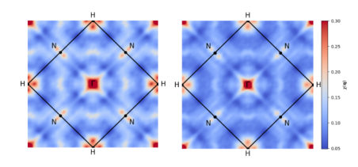
<figcaption class="paper-figure-caption"><b>Fig 4.</b> FIG. 4. Nesting function in the (hk0) plane at ambient pres- sure (left) and at 15.6 GPa (right).</figcaption>
</figure>
<figure class="paper-figure-card">
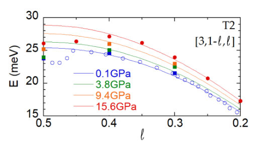
<figcaption class="paper-figure-caption"><b>Fig 5.</b> FIG. 5. Pressure dependence of the phonon dispersion of the T2 acoustic mode along the ΓN direction. Q=(3, 0.5, 0.5) is a N point. The blue open symbol are from Ref. 9. The lines are the calculated dispersion curves with the force constants described in the paper.</figcaption>
</figure>
</div>

<p><strong>Summary.</strong> This work uses inelastic X-ray scattering and DFT calculations to examine phonon behavior in Chromium as pressure approaches its antiferromagnetic quantum critical point. The key finding is that the observed phonon anomalies are robustly linked to Fermi surface nesting, suggesting that the SDW ordering mechanism is electronic rather than being driven by lattice instabilities (phonons) near $P_c$. This refines our understanding of itinerant magnetism at QCPs.</p>
<p><strong>Why it may be interesting.</strong> While focused on condensed matter magnetism, the interplay between lattice dynamics (phonons) and electronic instabilities (SDW/CDW) near a quantum critical point involves many-body physics relevant to strongly correlated systems.</p>
<details>
<summary>Detailed structure</summary>
<p><strong>Main problem.</strong> The study investigates phonon dynamics in Chromium under high pressure, specifically addressing whether lattice anomalies (Kohn anomalies) play a major role near the quantum critical point (QCP).</p>
<p><strong>Main result.</strong> The persistence of Kohn anomalies and the robustness of Fermi surface nesting suggest that these anomalies do not drive the antiferromagnetic ordering at high pressures.</p>
<p><strong>Method.</strong> The research combines inelastic X-ray scattering experiments with ab-initio Density Functional Theory (DFT) calculations using DFPT for phonon dispersion analysis.</p>
<p><strong>Model / system.</strong> The system is Chromium (Cr), an archetype material exhibiting itinerant antiferromagnetic spin density wave (SDW) ordering, studied under varying pressures up to 15.6 GPa.</p>
<p><strong>Key observables.</strong> Phonon dispersion curves, Kohn anomalies (phonon softening), and the evolution of the Fermi surface nesting function ($\chi''(\mathbf{q})$).</p>
<p><strong>Important parameters / regimes.</strong> Critical pressure ($P_c \approx 10$ GPa), high pressures up to $15.6$ GPa, and low temperatures.</p>
<p><strong>Assumptions / limitations.</strong> The analysis assumes that the SDW formation is the primary order parameter, and Kohn anomalies are primarily driven by electronic susceptibility rather than direct lattice instability near the QCP.</p>
<p><strong>Figures summary.</strong> Figures show phonon spectra/dispersion curves at ambient and high pressure along $\Gamma	ext{H}$ and $\Gamma	ext{N}$, illustrating the persistence of softening features despite crossing $P_c$.</p>
<p><strong>Paper structure.</strong> The paper establishes the background on SDW formation in Cr, presents experimental measurements of phonon anomalies under pressure, compares these findings with DFT calculations showing robust nesting, and concludes that electronic susceptibility dictates the QCP behavior.</p>
</details>
<details>
<summary>Abstract</summary>
<p>Fermi surface nesting is key to understanding the origin of the itinerant antiferromagnetic spin density wave in Chromium. At very low temperature, this density wave is destroyed above the critical pressure $P_c\approx$10~GPa, defining a quantum critical point. Strong electron-phonon coupling induces a small phonon softening close to the $H-$point of the Brillouin zone as well as close to the $H$-point. These phonon anomalies are known as Kohn anomalies. They remain unchanged down to 50K and are known to be present in both the paramagnetic and the antiferromagnetic phases. This paper presents inelastic X-ray scattering experiments on the phonon dispersion curves under pressure, up to $P=$15.6~GPa far above the critical pressure $P_c$. The softening of the well-known phonon anomalies is still present which leads to conclude that they do not play a major role at the antiferromagnetic ordering. Based on ab-initio calculation, the robustness of the Fermi surface nesting under pressure, explain the presence of these Kohn anomalies above the critical pressure.</p>
</details>
<p><sub><a href="#top">↑ back to top</a></sub></p>

<p><a id="paper-2607.16481"></a></p>
<h3 id="representation-dependent-machine-learning-of-the-isotropic-nematic-transition-in-the-lebwohl-lasher-model"><a href="http://arxiv.org/abs/2607.16481v1">Representation-Dependent Machine Learning of the Isotropic-Nematic Transition in the Lebwohl-Lasher Model</a></h3>
<p><strong>Authors:</strong> Maninder Kaur, Aojie Xue, David P Landau<br>
<strong>Type:</strong> theory · <strong>Category:</strong> statistical mechanics · <strong>PDF:</strong> <a href="https://arxiv.org/pdf/2607.16481v1">https://arxiv.org/pdf/2607.16481v1</a><br>
<strong>Analysis basis:</strong> full PDF text, analyzed in chunks
<strong>Topic relevance:</strong> <code>analog quantum simulation</code> <strong>1/5</strong> · <code>driven-dissipative phase transition</code> <strong>1/5</strong> · <code>methods for driven-dissipative</code> <strong>1/5</strong></p>
<div class="figure-strip-hint">↔ Scroll figures horizontally</div>
<div class="paper-figures-scroll">
<figure class="paper-figure-card">
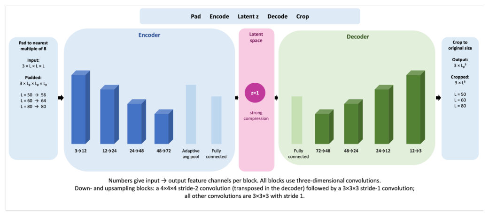
<figcaption class="paper-figure-caption"><b>Fig 1.</b> FIG. 1. Architecture of the three-dimensional convolutional autoencoder (CAE) used for nonlinear unsupervised dimensionality reduction.</figcaption>
</figure>
<figure class="paper-figure-card">
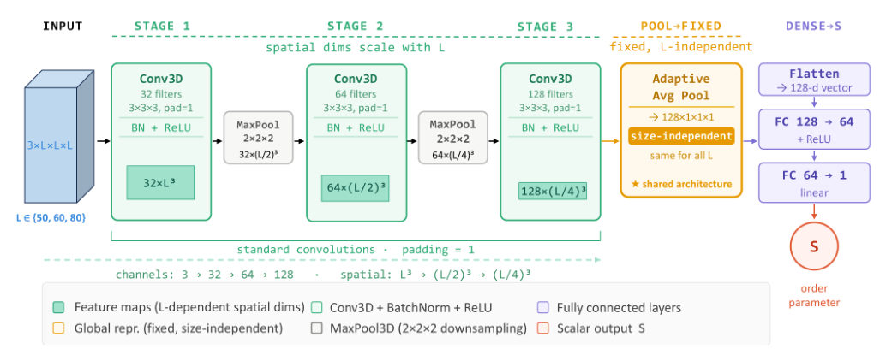
<figcaption class="paper-figure-caption"><b>Fig 2.</b> FIG. 2. Architecture of the three-dimensional convolutional neural network (CNN) used for supervised regression of the scalar nematic order parameter from raw molecular configurations.</figcaption>
</figure>
<figure class="paper-figure-card">
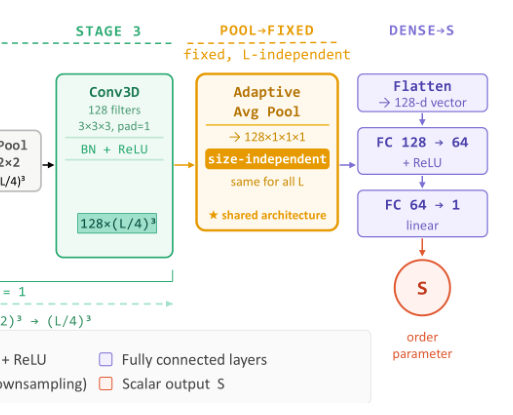
<figcaption class="paper-figure-caption"><b>Fig 3.</b> Fig. 3 shows the temperature dependence of the scalar nematic order parameter and the probability distribution P(S) near coexistence. Here, ⟨S⟩denotes the Monte Carlo estimate of the ensemble average of S at fixed temperature. For all three lattice sizes, ⟨S⟩decreases sharply over a narrow temperature interval. At the same time, P(S) develops a bimodal structure near the transition, with one peak associated with the weakly ordered nematic phase and the other with the nearly isotropic phase. The probability distributions shown near coexistence were constructed from configurations in a finite-size tem- perature window |T −T0(L)| ≤∆Twin, with ∆Twin = 0.0006. This window was chosen to improve...</figcaption>
</figure>
<figure class="paper-figure-card">
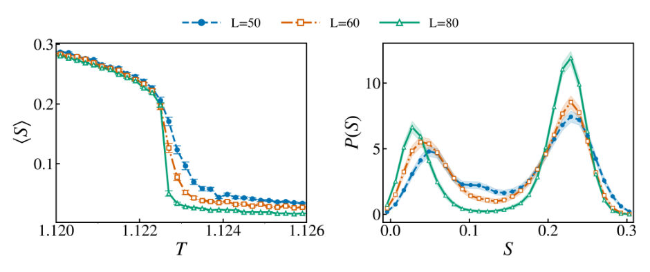
<figcaption class="paper-figure-caption"><b>Fig 4.</b> FIG. 3. Thermodynamic benchmark for the isotropic–nematic transition. (a) Temperature dependence of the scalar nematic order parameter ⟨S⟩for L = 50, 60, and 80. (b) Near-coexistence probability distribution P(S) constructed from the finite-size transition windows defined in the text.</figcaption>
</figure>
<figure class="paper-figure-card">
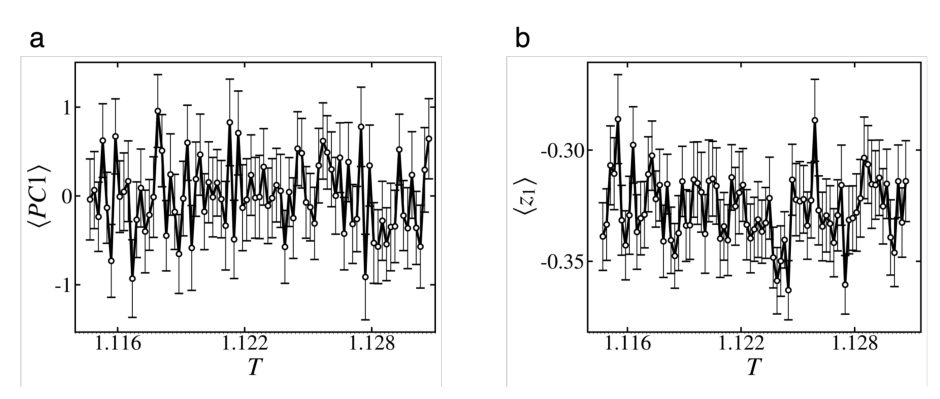
<figcaption class="paper-figure-caption"><b>Fig 5.</b> FIG. 4. Unsupervised learning on raw molecular configurations. Representative results are shown for L = 50. (a) Temperature dependence of the leading PCA score obtained from raw configurations. (b) Temperature dependence of the one-dimensional CAE latent coordinate obtained from raw configurations.</figcaption>
</figure>
</div>

<p><strong>Summary.</strong> This paper uses machine learning to study the isotropic-nematic phase transition in the Lebwohl-Lasher model. It demonstrates that unsupervised methods fail if raw molecular data are used because global rotational symmetries obscure the physical signal. However, by transforming the input into a rotationally invariant representation, the ML techniques successfully recover clear signatures of the phase transition.</p>
<p><strong>Why it may be interesting.</strong> While focused on classical statistical mechanics, the core methodological lesson—that input representation must respect underlying symmetries for feature extraction—is highly relevant when designing quantum state representations or observables for ML analysis in AMO physics.</p>
<details>
<summary>Detailed structure</summary>
<p><strong>Main problem.</strong> The study investigates whether machine learning detection of phase transitions depends critically on whether the input representation preserves the underlying symmetries of the physical system.</p>
<p><strong>Main result.</strong> Unsupervised ML methods (PCA, CAE) fail to detect the transition using raw molecular configurations but successfully recover transition signatures when the input is transformed into a rotationally invariant local-correlation representation.</p>
<p><strong>Method.</strong> The authors compare unsupervised learning techniques (PCA and CAE) against supervised regression (CNN) applied to data from Monte Carlo simulations of the Lebwohl-Lasher model.</p>
<p><strong>Model / system.</strong> The system studied is the three-dimensional Lebwohl-Lasher (LL) model, which models nematic liquid crystals exhibiting a weak first-order isotropic--nematic phase transition. The Hamiltonian interaction is apolar and possesses continuous rotational degeneracy.</p>
<p><strong>Key observables.</strong> Scalar nematic order parameter ($S$), bimodal coexistence distributions, leading PCA scores, and CAE latent coordinates.</p>
<p><strong>Important parameters / regimes.</strong> Lattice sizes ($L=50, 60, 80$) and the coupling constant ratio $J/k_B T = 1$.</p>
<p><strong>Assumptions / limitations.</strong> The primary assumption tested is that for unsupervised ML to work on systems with continuous symmetries, the input representation must be invariant under those symmetry transformations.</p>
<p><strong>Figures summary.</strong> Figures compare thermodynamic benchmarks ($\langle S 
angle$ vs $T$, $P(S)$) against results from PCA/CAE using raw data (showing failure) versus bond-$P_2$ data (showing success), alongside CNN regression plots.</p>
<p><strong>Paper structure.</strong> The paper establishes the physical model and transition, then systematically tests ML methods: first on raw configurations (failure), followed by symmetry-adapted representations (success for unsupervised learning), concluding with a comparison to supervised prediction accuracy.</p>
</details>
<details>
<summary>Abstract</summary>
<p>Machine-learning detection of phase transitions depends not only on the learning algorithm, but also on whether the input representation preserves the symmetries of the system. We examine this for the weak first-order isotropic--nematic transition of the three-dimensional Lebwohl--Lasher model, whose apolar and continuously degenerate nematic phase makes raw molecular configurations a challenging input for unsupervised learning. Principal component analysis (PCA) and a convolutional autoencoder (CAE) fail to identify the transition from raw configurations because rotationally equivalent nematic states can appear far apart in the input space. When the same configurations are transformed into a rotationally invariant local-correlation representation, both methods recover transition-sensitive signatures and bimodal coexistence distributions. A supervised three-dimensional convolutional neural network (CNN), by contrast, accurately predicts the scalar order parameter from raw configurations when given order-parameter labels. The Lebwohl-Lasher model therefore separates unsupervised phase discovery from supervised order-parameter regression and shows that symmetry-respecting input representations are needed for unsupervised machine learning in orientationally ordered systems.</p>
</details>
<p><sub><a href="#top">↑ back to top</a></sub></p>

<p><a id="paper-2607.17408"></a></p>
<h3 id="the-history-of-hilbert-space-formulations-of-classical-physics"><a href="http://arxiv.org/abs/2607.17408v1">The History of Hilbert-Space Formulations of Classical Physics</a></h3>
<p><strong>Authors:</strong> Jacob A. Barandes<br>
<strong>Type:</strong> theory · <strong>Category:</strong> other · <strong>PDF:</strong> <a href="https://arxiv.org/pdf/2607.17408v1">https://arxiv.org/pdf/2607.17408v1</a><br>
<strong>Analysis basis:</strong> full PDF text, analyzed in chunks
<strong>Topic relevance:</strong> <code>Keldysh / 2PI / non-Gaussian methods</code> <strong>1/5</strong> · <code>analog quantum simulation</code> <strong>1/5</strong> · <code>non-equilibrium dynamics</code> <strong>1/5</strong></p>
<div class="figure-strip-hint">↔ Scroll figures horizontally</div>
<div class="paper-figures-scroll">
<figure class="paper-figure-card">
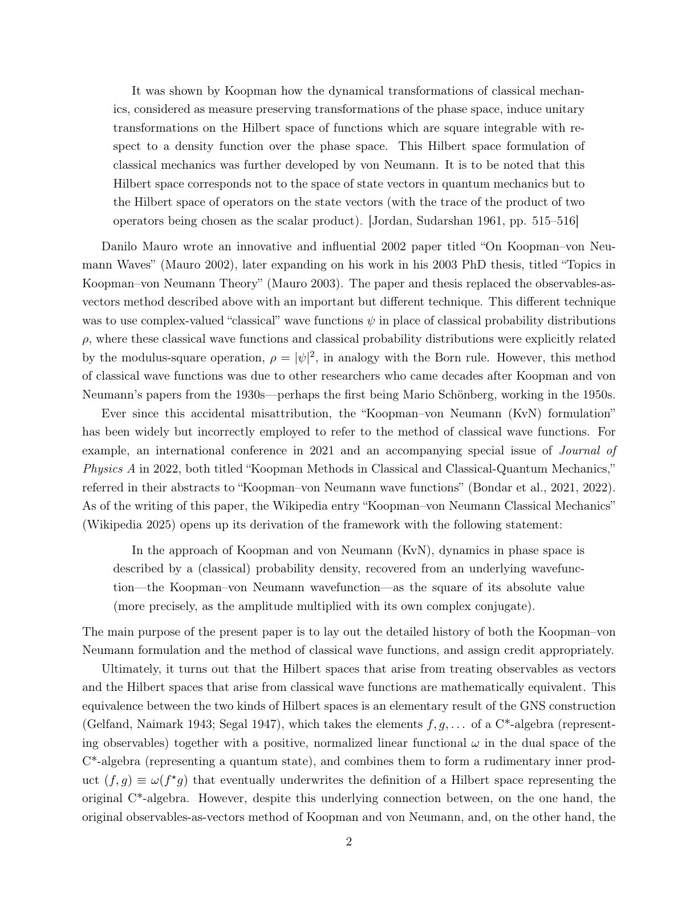
<figcaption class="paper-figure-caption"><b>Fig 1.</b> Low-resolution page preview, page 2</figcaption>
</figure>
<figure class="paper-figure-card">
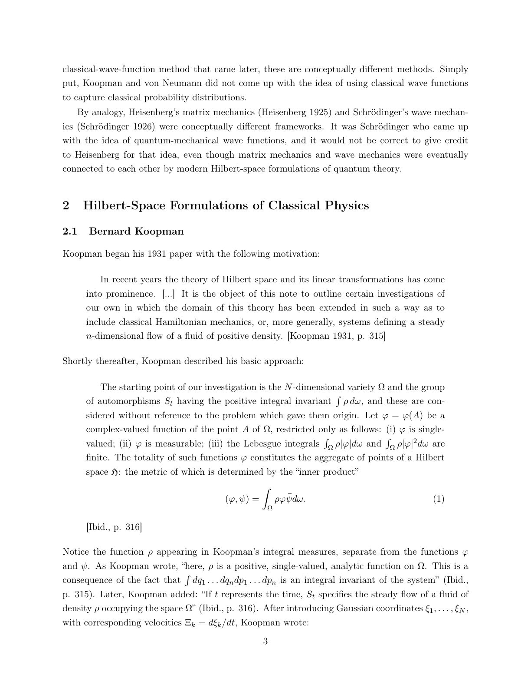
<figcaption class="paper-figure-caption"><b>Fig 2.</b> Low-resolution page preview, page 3</figcaption>
</figure>
<figure class="paper-figure-card">
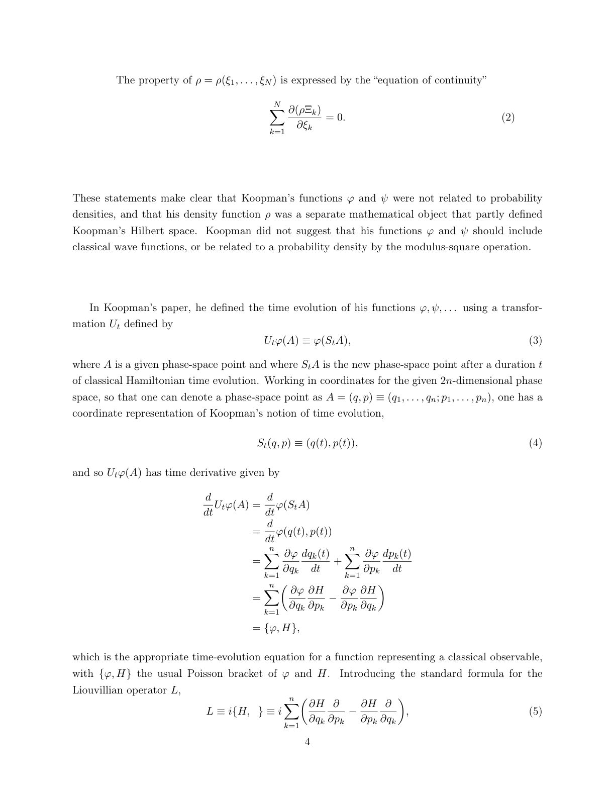
<figcaption class="paper-figure-caption"><b>Fig 3.</b> Low-resolution page preview, page 4</figcaption>
</figure>
<figure class="paper-figure-card">
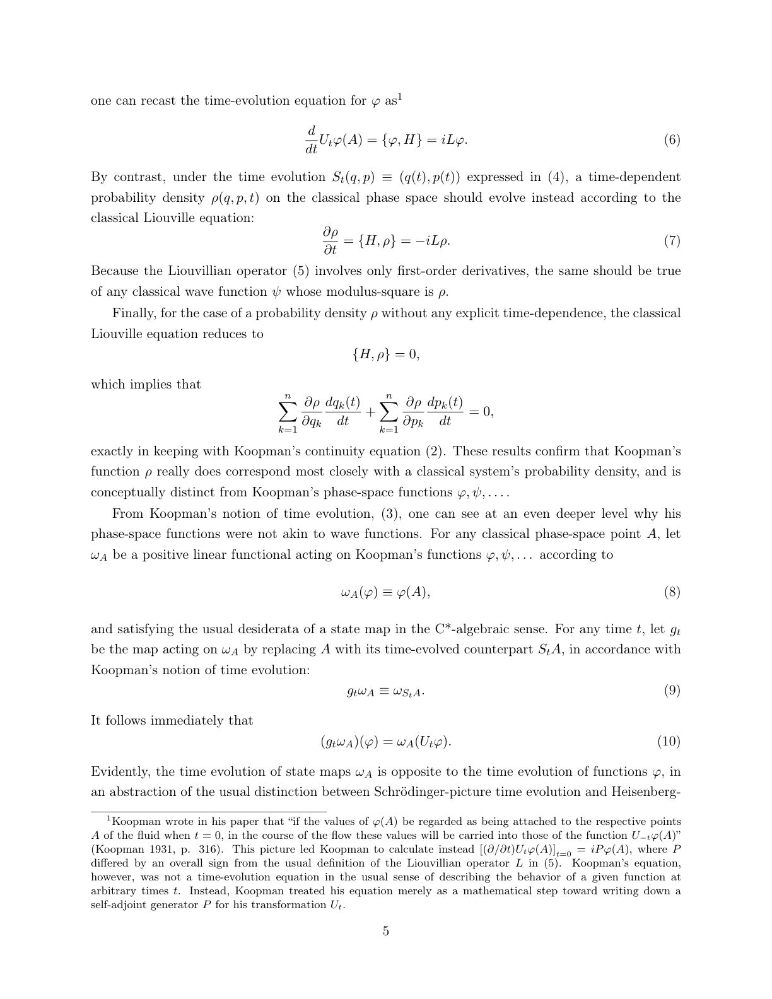
<figcaption class="paper-figure-caption"><b>Fig 4.</b> Low-resolution page preview, page 5</figcaption>
</figure>
<figure class="paper-figure-card">
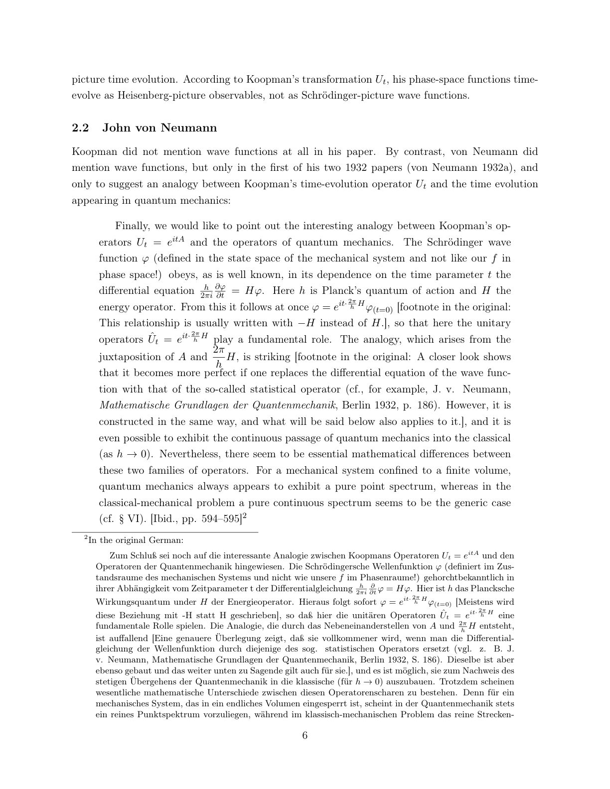
<figcaption class="paper-figure-caption"><b>Fig 5.</b> Low-resolution page preview, page 6</figcaption>
</figure>
</div>

<p><strong>Summary.</strong> This paper reviews two ways of applying Hilbert space techniques—Koopman-von Neumann and 'classical wave functions'—to describe classical mechanics. It clarifies that although mathematically equivalent, these approaches are conceptually distinct, and it corrects historical inaccuracies regarding their origins. The work is vital for understanding the mathematical foundations connecting classical phase space dynamics to quantum formalism.</p>
<p><strong>Why it may be interesting.</strong> It provides deep insight into the formalisms used to bridge classical dynamics with quantum mechanical tools, which is crucial for understanding semiclassical approximations in AMO physics.</p>
<details>
<summary>Detailed structure</summary>
<p><strong>Main problem.</strong> The paper aims to explain and distinguish between two distinct Hilbert-space formulations—the Koopman–von Neumann (KvN) approach and the method of 'classical' wave functions—applied to classical Hamiltonian mechanics.</p>
<p><strong>Main result.</strong> While both methods yield mathematically equivalent Hilbert spaces, they are conceptually distinct; furthermore, the paper provides a detailed historical correction regarding the attribution of the classical wave function formalism.</p>
<p><strong>Method.</strong> The analysis involves comparing mathematical structures derived from Koopman's operator theory with those developed by later researchers like Schönberg, focusing on their respective evolution equations and associated inner products.</p>
<p><strong>Model / system.</strong> The system is classical Hamiltonian mechanics evolving on a phase space ($\Omega$ or $(q, p)$). The dynamics are governed by the Poisson bracket $\{H, \cdot\}$ leading to the Liouville equation for probability density $
ho$.</p>
<p><strong>Key observables.</strong> Probability density ($
ho$), Koopman functions ($\varphi$), and complex 'classical' wave functions ($\psi$).</p>
<p><strong>Important parameters / regimes.</strong> The Hamiltonian $H$ dictates the dynamics; the comparison highlights the formal analogy to quantum mechanics, particularly in the classical limit.</p>
<p><strong>Assumptions / limitations.</strong> The paper critically analyzes historical claims, noting that Koopman and von Neumann did not postulate the existence of classical wave functions evolving via a Schrödinger-like equation.</p>
<p><strong>Paper structure.</strong> The paper proceeds by first detailing the KvN formulation, then introducing the conceptually separate 'classical wave function' method (citing Schönberg et al.), and finally comparing their mathematical structures while correcting historical misattributions regarding who developed which formalism.</p>
</details>
<details>
<summary>Abstract</summary>
<p>Hilbert-space techniques are widely used not only for quantum theory, but also for classical physics. Two important examples are the Koopman-von Neumann (KvN) formulation and the method of ``classical'' wave functions. As this paper explains, these two approaches are conceptually distinct. In particular, the method of classical wave functions was not due to Bernard Koopman and John von Neumann, but was developed independently by a number of later researchers, perhaps first by Mario Schönberg, with key contributions from Angelo Loinger, Giacomo Della Riccia, Norbert Wiener, and E. C. George Sudarshan. The primary goals of this paper are to explain these two approaches, describe the relevant history in detail, and give credit where credit is due.</p>
</details>
<p><sub><a href="#top">↑ back to top</a></sub></p>

<p><a id="paper-2607.16958"></a></p>
<h3 id="the-lee-yang-property-of-the-blume-capel-model"><a href="http://arxiv.org/abs/2607.16958v1">The Lee-Yang property of the Blume-Capel model</a></h3>
<p><strong>Authors:</strong> Yuri Kozitsky, Yurij Holovatch<br>
<strong>Type:</strong> theory · <strong>Category:</strong> statistical mechanics · <strong>PDF:</strong> <a href="https://arxiv.org/pdf/2607.16958v1">https://arxiv.org/pdf/2607.16958v1</a><br>
<strong>Analysis basis:</strong> full PDF text, analyzed in chunks
<strong>Topic relevance:</strong> <code>Keldysh / 2PI / non-Gaussian methods</code> <strong>1/5</strong> · <code>analog quantum simulation</code> <strong>1/5</strong> · <code>driven-dissipative phase transition</code> <strong>1/5</strong></p>
<div class="figure-strip-hint">↔ Scroll figures horizontally</div>
<div class="paper-figures-scroll">
<figure class="paper-figure-card">
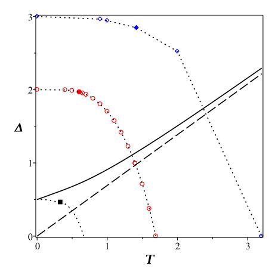
<figcaption class="paper-figure-caption"><b>Fig 1.</b> FIG. 1. Phase diagram of the Blume-Capel model in the crystal field – temperature plane at J = 1: on the complete graph and on the d = 2, 3 simple cubic lattices. The dotted lines represent the phase transition lines, from bottom to top: complete graph, d = 2, d = 3, respectively. For the complete graph, the exact result [4] is shown. For the lattices, the lines serve as a guide. Symbols show the results of the MC sim- ulations (hollow disks for d = 2 [5] and hollow diamonds for d = 3 [6]). Filled symbols show the location of the tricritical point where the 1st order transition line (left from the tricrit- ical point) meets the 2nd order transition line (right from the point). The solid and...</figcaption>
</figure>
</div>

<p><strong>Summary.</strong> This paper tackles the Lee-Yang property for the Blume-Capel model, a system whose behavior is theoretically challenging due to its anisotropy term. The authors prove that strong ferromagnetic interactions can mathematically restore this crucial property—which governs phase transition analysis—even in parameter regimes where standard theorems predict failure. This provides significant theoretical insight into the critical nature of complex spin systems.</p>
<p><strong>Why it may be interesting.</strong> This work is highly relevant for theoretical physicists studying phase transitions in complex quantum or classical spin systems, as understanding when such mathematical properties hold dictates the reliability of mean-field approximations and critical exponents.</p>
<details>
<summary>Detailed structure</summary>
<p><strong>Main problem.</strong> The central problem is extending the Lee-Yang property—a condition on the zeros of the partition function related to phase transitions—to the Blume-Capel model in regimes where standard theorems fail.</p>
<p><strong>Main result.</strong> The authors demonstrate that the ferromagnetic interaction can induce the Lee-Yang property for the Blume-Capel model even when the single-spin anisotropy term ($eta\Delta$) exceeds the threshold guaranteed by existing theorems.</p>
<p><strong>Method.</strong> The analysis employs advanced mathematical techniques involving differential operators, stability conditions on derived functions (like $\Psi$), and relating these to the partition function zeros in the thermodynamic limit.</p>
<p><strong>Model / system.</strong> The system is the Blume-Capel model, an extension of the Ising spin model with spins $S_i \in \{-1, 0, +1\}$, governed by a Hamiltonian including nearest-neighbor ferromagnetic interactions ($J_{ij}$) and a single-ion anisotropy term ($\Delta S_i^2$).</p>
<p><strong>Key observables.</strong> The Lee-Yang property itself (zeros of the partition function lying on the unit circle) is the key diagnostic, alongside the stability of derived functions $G$ and $\Psi$.</p>
<p><strong>Important parameters / regimes.</strong> Key parameters include the coupling constants ($J_{ij}$), the anisotropy field ($\Delta$), and the inverse temperature ($eta$). The critical regime involves comparing $eta\Delta$ to $\ln 2$.</p>
<p><strong>Assumptions / limitations.</strong> The results are presented as sufficient conditions; the proof relies on establishing the stability of certain mathematical constructs derived from the partition function, which is an extension beyond the strict bounds of existing theorems.</p>
<p><strong>Figures summary.</strong> Figure 1 illustrates the phase diagram of the BC model and compares simulation/theoretical predictions for transition lines. Other figures compare different functions related to the Lee-Yang property across varying parameters.</p>
<p><strong>Paper structure.</strong> The paper builds upon the established Lee-Yang theory, first identifying the failure point in the BC model ($eta\Delta > \ln 2$). It then develops a mathematical framework using differential operators and stability analysis (Chunks 1 &amp; 2) to prove that ferromagnetic interactions can restore the property. Finally, it discusses specific lattice cases and limitations (Chunk 3).</p>
</details>
<details>
<summary>Abstract</summary>
<p>The Lee-Yang theory is based on the theorem concerning a property of the ferromagnetic Ising model partition function proved by T. D. Lee and C. N. Yang in 1952. It provides powerful tools for understanding the very nature of phase transitions and critical phenomena in various spin and similar models. Sometimes, this theory is applied to models for which the theorem's validity has not been proved. By the main result of E. H. Lieb and A. D. Sokal, Commun. Math. Phys. 80, 153 (1981), for a given ferromagnetic model, this validity is guaranteed by the same property of the single-spin partition function. Due to the anisotropy term $\sum_i ΔS_i^2$, the single-spin partition function of the Blume-Capel model fails to have the Lee-Yang property for $βΔ> \ln 2$. In this article, we show that the ferromagnetic interaction in such a model can induce the Lee-Yang property, even for these values of $βΔ$. To the best of our knowledge, it is the first result of this kind.</p>
</details>
<p><sub><a href="#top">↑ back to top</a></sub></p>

<p><a id="paper-2607.16684"></a></p>
<h3 id="a-disconnected-superconducting-regime-at-the-parent-limit-of-infinite-layer-nickelates"><a href="http://arxiv.org/abs/2607.16684v1">A Disconnected Superconducting Regime at the Parent Limit of Infinite-Layer Nickelates</a></h3>
<p><strong>Authors:</strong> Chihao Li, Yutong Chen, Yaolong Bian, Yihao Zhang, Jiahao Ye, Zhitong An, Xingtian Sun, Yu Fan, Zhihui Chen, Zhanze Wang, Jinglei Zhang, Haichao Xu, Rui Peng, Donglai Feng<br>
<strong>Type:</strong> experiment · <strong>Category:</strong> strongly correlated electrons · <strong>PDF:</strong> <a href="https://arxiv.org/pdf/2607.16684v1">https://arxiv.org/pdf/2607.16684v1</a><br>
<strong>Analysis basis:</strong> full PDF text, analyzed in chunks
<strong>Topic relevance:</strong> <code>Kondo &amp; dissipative impurity</code> <strong>1/5</strong> · <code>analog quantum simulation</code> <strong>1/5</strong></p>
<div class="figure-strip-hint">↔ Scroll figures horizontally</div>
<div class="paper-figures-scroll">
<figure class="paper-figure-card">
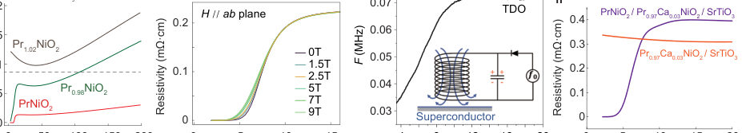
<figcaption class="paper-figure-caption"><b>Fig 1.</b> FIG. 1. Intrinsic superconductivity in PrNiO2/SrTiO3 films. a, Schematic of 20 uc PrNiO2/SrTiO3 films without SrTiO3 capping layers. b, Temperature-dependent resistivity of PrNiO2/SrTiO3 compared with off-stoichiometric samples. The dashed line represents quantum of resistance per NiO2 sheet ρQ ∼= 0.859 mΩ· cm. c, d, Magnetic-field-dependent transport of the PrNiO2 thin films as a function of strong sweeping temperatures at various fixed magnetic fields, with the field oriented (c) in the ab plane and (d) parallel to the ab plane. e, Low- temperature resistance of the PrNiO2/SrTiO3 film, highlighting the superconducting transition. f, Diamagnetic response of the PrNiO2 film probed by a...</figcaption>
</figure>
<figure class="paper-figure-card">
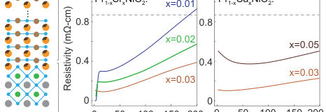
<figcaption class="paper-figure-caption"><b>Fig 2.</b> FIG. 2. Superconducting robustness under isovalent substi- tution and its sensitivity to Sr/Ca doping. a, Schematic of 20 uc LaxPr1−xNiO2/SrTiO3 films. b, c, Magnetic-field-dependent transport of (b) La1/3Pr2/3NiO2 and (c) La2/3Pr1/3NiO2 under magnetic fields along c axis, respectively. d, Schematic of 20 uc aliovalent-doped Pr1−xAxNiO2 (A = Sr, Ca) thin films. e, f, Temperature-dependent resistivity of (e) Pr1−xSrxNiO2/SrTiO3 (x = 0.01, 0.02 and 0.03) and (f) Pr1−xCaxNiO2/SrTiO3 (x = 0.03 and 0.05), respectively. The dashed line represents quantum of resis- tance per NiO2 sheet ρQ.</figcaption>
</figure>
<figure class="paper-figure-card">
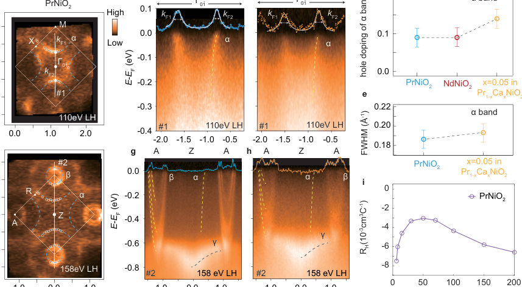
<figcaption class="paper-figure-caption"><b>Fig 3.</b> FIG. 3. Comparable self-doping in PrNiO2 with other pristine IL-nickelates and the suppression of superconductivity by slight hole doping. a, Photoemission intensity map of PrNiO2 at the Γ plane, integrated over an energy window of EF ± 50 meV under linear horizontal (LH) polarization. b, c, Band spectra of 20 uc PrNiO2 (b) and Pr0.95Ca0.05NiO2 (c) along the M-Γ-M direction. The momentum distribution curves (MDCs) integrated within EF ± 25 meV are plotted above the respective spectra, where white arrows denote the full width at half max- imum (FWHM) of the α band. d, Effective hole-doping level of the Ni 3dx2−y2 (α) band for PrNiO2, NdNiO2 and Pr0.95Ca0.05NiO2 extracted from the Luttinger...</figcaption>
</figure>
<figure class="paper-figure-card">
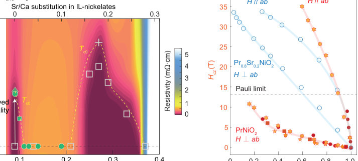
<figcaption class="paper-figure-caption"><b>Fig 4.</b> FIG. 4. Distinct superconducting regime from optimally hole-doped superconducting dome with more two-dimensional superconduc- tivity. a, Phase diagram of hole doped PrNiO2 and equivalent cationic rare-earth ion substituted LaxPr1−xNiO2. The hole doping p of the Ni 3dx2−y2 band was determined by the Luttinger volume of uncapped IL-nickelates, Pr0.95Ca0.05NiO2 and Pr0.8Ca0.2NiO2 according to ARPES results from this work and refs. 11, 12, respectively. Resistivity data of Pr1−xSrxNiO2 around the optimally-doped regime is adapted from refs. 4, 18, respectively. b, Upper critical field Hc2 of PrNiO2 samples versus T/Tc. The hollow circles refer to data of optimally doped Pr1−xSrxNiO2, which is...</figcaption>
</figure>
</div>

<p><strong>Summary.</strong> This paper investigates superconducting behavior in infinite-layer nickelates, finding intrinsic zero-resistance superconductivity even in pristine films. Crucially, they demonstrate that this parent-state superconductivity forms a distinct regime, separated from the conventionally understood doping dome, suggesting unique electronic correlations at play.</p>
<p><strong>Why it may be interesting.</strong> The work directly addresses complex many-body physics in strongly correlated oxides, providing crucial experimental constraints on theories of unconventional superconductivity that are relevant to quantum materials research.</p>
<details>
<summary>Detailed structure</summary>
<p><strong>Main problem.</strong> To determine if superconductivity in infinite-layer nickelates is governed by a cuprate-like single doping dome or if an intrinsic superconducting regime exists near the parent, undoped limit.</p>
<p><strong>Main result.</strong> The study establishes a unique, separated superconducting regime near the parent state, distinct from the conventional high-doping dome. This suggests that infinite-layer nickelates host distinct superconducting physics compared to cuprate analogs.</p>
<p><strong>Method.</strong> A combination of transport measurements (zero resistance, diamagnetism), heterostructure engineering to rule out interface effects, and Angle-Resolved Photoemission Spectroscopy (ARPES) were employed.</p>
<p><strong>Model / system.</strong> The physical system is infinite-layer nickelates ($ ext{RENiO}_2$), studied in pristine and stoichiometric forms, with doping controlled via both isovalent ($    ext{La}/    ext{Pr}$) and aliovalent substitutions ($ ext{Sr}/    ext{Ca}$).</p>
<p><strong>Key observables.</strong> Zero resistance, diamagnetism (TDO), upper-critical-field anisotropy ($\gamma$), and electronic band structure features observed via ARPES.</p>
<p><strong>Important parameters / regimes.</strong> The superconducting phase is confined to a narrow doping range near the parent state ($p \approx 0.09$ holes), separated from the dome established by higher divalent doping levels.</p>
<p><strong>Assumptions / limitations.</strong> The primary assumption challenged is that all superconductivity in these materials must follow the simple, continuous doping evolution observed in cuprates.</p>
<p><strong>Figures summary.</strong> Figures illustrate zero resistance in uncapped films and heterostructures, confirm robustness under La substitution, show ARPES spectra comparing superconducting to lightly doped states, and map out a phase diagram showing two distinct superconducting regimes.</p>
<p><strong>Paper structure.</strong> The paper progresses by first establishing the intrinsic superconductivity of pristine $   ext{PrNiO}_2$, then ruling out interfacial origins via heterostructures, mapping the doping dependence using ARPES and transport measurements, and finally contrasting this narrow parent-state regime with the established high-doping dome.</p>
</details>
<details>
<summary>Abstract</summary>
<p>Infinite-layer nickelates have been widely viewed as cuprate analogs in which superconductivity emerges and forms a superconducting dome centered around 10-20% cation substitution. Here we show that pristine and stoichiometric PrNiO2, without cation substitution, exhibits intrinsic superconductivity characterized by zero resistance and diamagnetism in uncapped films. Through heterostructure engineering, we further exclude an interfacial origin of the superconductivity. Remarkably, zero-resistance superconductivity is consistently observed in trivalent-substituted PrNiO2, whereas it is rapidly suppressed by dilute divalent substitution. Combined with angle-resolved photoemission studies, these results indicate that such a new superconducting regime is confined to within 3% additional hole doping from pristine PrNiO2. Furthermore, this phase is separated from the previously established superconducting dome around ~ 20% divalent doping by a non-superconducting region in the phase diagram, and is further distinguished by a remarkably stronger upper-critical-field anisotropy. These findings establish a unique separated superconducting regime, suggesting that infinite-layer nickelates are not merely cuprate analogs but host distinct superconducting physics.</p>
</details>
<p><sub><a href="#top">↑ back to top</a></sub></p>

<p><a id="paper-2607.17273"></a></p>
<h3 id="continuous-time-quantum-walk-propagation-for-irregular-temporal-graph-forecasting"><a href="http://arxiv.org/abs/2607.17273v1">Continuous Time Quantum Walk Propagation for Irregular Temporal Graph Forecasting</a></h3>
<p><strong>Authors:</strong> Jiaqi Sun, Tianhao Li, Zhihao Bian<br>
<strong>Type:</strong> theory · <strong>Category:</strong> disordered systems and neural networks · <strong>PDF:</strong> <a href="https://arxiv.org/pdf/2607.17273v1">https://arxiv.org/pdf/2607.17273v1</a><br>
<strong>Analysis basis:</strong> full PDF text, analyzed in chunks
<strong>Topic relevance:</strong> <code>methods for driven-dissipative</code> <strong>1/5</strong> · <code>non-equilibrium dynamics</code> <strong>1/5</strong></p>
<div class="figure-strip-hint">↔ Scroll figures horizontally</div>
<div class="paper-figures-scroll">
<figure class="paper-figure-card">
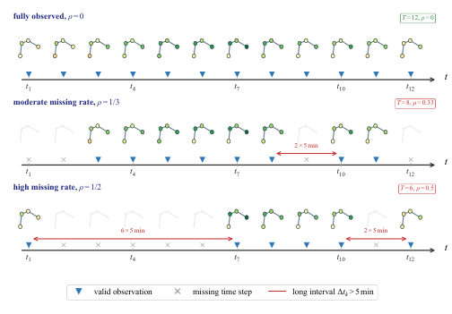
<figcaption class="paper-figure-caption"><b>Fig 1.</b> FIG. 1. Temporal graph snapshot sequences under differ- ent masking settings. The figure shows traffic graph observa- tion sequences for three representative MASK configurations, corresponding to complete observation, moderate missingness and high missingness. Valid observation steps are shown as clear graph snapshots, whereas missing steps are faded.</figcaption>
</figure>
<figure class="paper-figure-card">
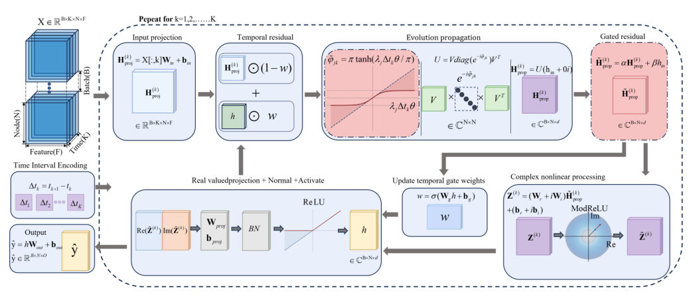
<figcaption class="paper-figure-caption"><b>Fig 2.</b> FIG. 2. Forward propagation pipeline of QWTA-Base.The model input is a batch tensor of irregular historical observations, X ∈RB×K×N×F .The input passes through input projection, recurrent hidden fusion, CTQW-type spectral propagation, and complex-valued nonlinear processing to generate the recurrent hidden representation. The red dashed box denotes the extension module. The final hidden representation is projected into the real domain to generate the prediction ˆy.</figcaption>
</figure>
<figure class="paper-figure-card">
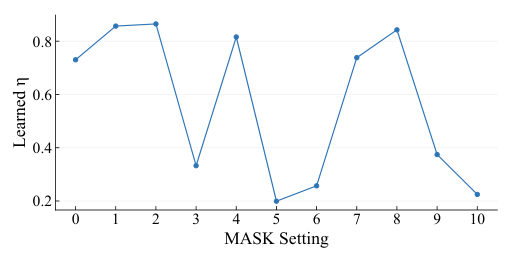
<figcaption class="paper-figure-caption"><b>Fig 3.</b> FIG. 3. Time-scaling parameter η learned by QWTA-GR at the final checkpoints for MASK0–MASK10. All values lie in the analysis interval [0.1, 1], but they vary non-monotonically with the number of valid input steps T. This indicates that the spectral phase modulation scale depends on the masking setting.</figcaption>
</figure>
<figure class="paper-figure-card">
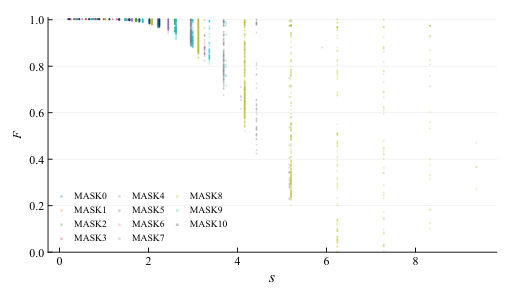
<figcaption class="paper-figure-caption"><b>Fig 4.</b> FIG. 4. Relationship between effective phase scale and propa- gation fidelity for real hidden propagation inputs. Each point corresponds to one hidden propagation input hin extracted during model forward propagation. The horizontal axis is the actual effective phase scale s = |∆tkη| of that sample. The vertical axis is the fidelity F between the unclipped propaga- tion output and the soft-clipped propagation output.</figcaption>
</figure>
<figure class="paper-figure-card">
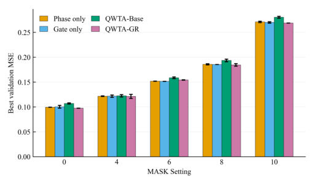
<figcaption class="paper-figure-caption"><b>Fig 5.</b> FIG. 5. Component ablation results for phase modulation and gated residual modules. The figure compares the Phase- only, Gate-only, QWTA-Base, and full QWTA-GR variants under five representative MASK settings in terms of valida- tion MSE. The Phase-only and Gate-only variants retain only phase soft clipping and gated residual fusion, respectively. QWTA-Base denotes the basic CTQW spectral propagation backbone without phase soft clipping or gated residual fu- sion. QWTA-GR denotes the full model with both stabiliza- tion mechanisms.</figcaption>
</figure>
</div>

<p><strong>Summary.</strong> This paper proposes the Quantum Walk Temporal Architecture (QWTA) to improve temporal graph forecasting by modeling signal propagation using Continuous Time Quantum Walks (CTQW). QWTA embeds irregular time intervals directly into the phase modulation of the quantum evolution operator, offering a physically motivated alternative to classical GNNs. The resulting framework shows strong potential for handling missing historical data in complex systems like traffic networks.</p>
<p><strong>Why it may be interesting.</strong> The explicit use of quantum evolution operators derived from graph Laplacians to model time series dynamics provides a novel physical interpretation for temporal data processing in machine learning, bridging spectral graph theory with deep learning architectures.</p>
<details>
<summary>Detailed structure</summary>
<p><strong>Main problem.</strong> Developing a graph propagation scheme for temporal graph forecasting that can explicitly handle irregular time intervals (missing historical observations).</p>
<p><strong>Main result.</strong> The proposed QWTA-GR model achieves competitive performance in forecasting under various missingness settings by embedding phase information from irregular time gaps into the quantum walk evolution.</p>
<p><strong>Method.</strong> It replaces classical GNN propagation with a Quantum Walk Temporal Architecture (QWTA), which uses the spectral decomposition of the graph Laplacian to modulate the propagation kernel's phase based on observed time intervals.</p>
<p><strong>Model / system.</strong> The model is built upon Continuous Time Quantum Walks (CTQW) defined by the normalized graph Laplacian $L$ as the Hamiltonian. The evolution operator $U(	au)$ governs the quantum dynamics, which is adapted to handle irregular time steps $\Delta t_k$.</p>
<p><strong>Key observables.</strong> Probability at a node $|\langle j|\psi(	au)
angle|^2$, and the final forecasted graph signal $\hat{y}$.</p>
<p><strong>Important parameters / regimes.</strong> The effective observation interval ($\Delta t_k$), the learnable time-scaling parameter ($\eta$), and the gating weight ($w$) used for state fusion.</p>
<p><strong>Assumptions / limitations.</strong> The core assumption is that CTQW's ability to encode spectral phase modulation allows it to model temporal dependencies more physically accurately than classical diffusion models, although performance varies based on missingness patterns.</p>
<p><strong>Figures summary.</strong> Figure 1 illustrates the application of the framework across three representative masking settings (complete, moderate, high missingness) for traffic graph observations.</p>
<p><strong>Paper structure.</strong> The paper introduces QWTA by first establishing the limitations of classical GNNs in handling time gaps. It then details the spectral propagation mechanism using CTQW, proposing QWTA-Base and enhancing it with stabilization techniques (QWTA-GR) through phase soft clipping and gated residual fusion.</p>
</details>
<details>
<summary>Abstract</summary>
<p>Continuous time quantum walks built on graph Laplacians produce non monotonic graph propagation features through quantum interference during evolution, which classical diffusion cannot achieve. Such walks deliver a physically motivated propagation scheme for temporal graph signal modeling. We propose Quantum Walk Temporal Architecture (QWTA), which replaces classical graph propagation with a CTQW-type parameterized spectral propagator. QWTA embeds effective observation intervals into the spectral phase modulation of the propagation kernel. QWTA-Base preserves exact CTQW spectral evolution and serves as a physically faithful propagation reference. QWTA-GR further introduces phase soft clipping and gated residual fusion to stabilize propagation. The results show that explicit phase encoding of irregular time intervals, when combined with suitable stabilization, provides a physically motivated and competitive graph propagation design for temporal graph forecasting with missing historical observations.</p>
</details>
<p><sub><a href="#top">↑ back to top</a></sub></p>

<p><a id="paper-2607.17417"></a></p>
<h3 id="grounded-verification-of-chemical-and-materials-reasoning-detection-is-the-bottleneck"><a href="http://arxiv.org/abs/2607.17417v1">Grounded verification of chemical and materials reasoning: detection is the bottleneck</a></h3>
<p><strong>Authors:</strong> Can Polat, Mustafa Kurban, Erchin Serpedin, Hasan Kurban<br>
<strong>Type:</strong> theory · <strong>Category:</strong> other · <strong>PDF:</strong> <a href="https://arxiv.org/pdf/2607.17417v1">https://arxiv.org/pdf/2607.17417v1</a><br>
<strong>Analysis basis:</strong> full PDF text, analyzed in chunks
<strong>Topic relevance:</strong> <code>analog quantum simulation</code> <strong>1/5</strong> · <code>correlated cavity matter</code> <strong>1/5</strong></p>
<div class="figure-strip-hint">↔ Scroll figures horizontally</div>
<div class="paper-figures-scroll">
<figure class="paper-figure-card">
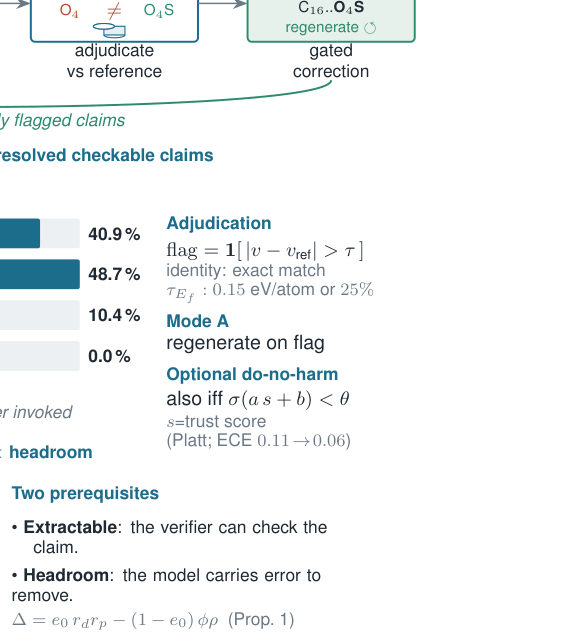
<figcaption class="paper-figure-caption"><b>Fig 1.</b> Figure 1 Method overview. a, Verify-and-correct loop (ampicillin schematic): extract (name, value) claims, check them against PubChem/MP/CCCBDB, and on flag re-inject the reference in verifier feedback and regenerate, repairing flagged claims only. b, Cheapest-first tier ladder with holdout resolution shares (40.9/48.7/10.4/0.0%; DFT tier unused). Quantitative flags use flag = 𝟏[|𝑣−𝑣ref| &gt; 𝜏] (𝜏𝐸𝑓= 0.15 eV/atom or 25%; identity exact match); Mode A regenerates on flag, with an evaluated Platt trust gate on the constants rerun. c, Lift requires extractability × headroom (materials formulas and isotope long tail); near-ceiling or unparseable cases show limited or no gain (Prop. 1).</figcaption>
</figure>
<figure class="paper-figure-card">
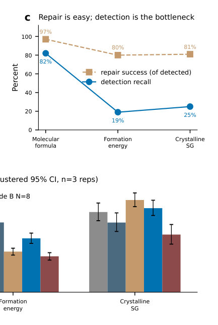
<figcaption class="paper-figure-caption"><b>Fig 2.</b> Figure 2 The problem and the fix. a, Baseline molecular-formula error given commitment rises monotoni- cally with compound rarity (PubChem-CID-ordered strata; pooled over models), from 0% on well-known compounds to 58% on recent drugs, the regime where confabulation concentrates. b, Intention-to-treat error (wrong or no-commit) by surface and condition, prompt-clustered 95% confidence intervals (𝑛= 3 replicates): gated Mode A and Mode B reduce molecular error, and Mode B additionally reduces formation-energy error. c, Two-stage decomposition of gated correction: repair success is uniformly high wherever a flag fires, so in-loop detection recall is the bottleneck that differentiates the...</figcaption>
</figure>
<figure class="paper-figure-card">
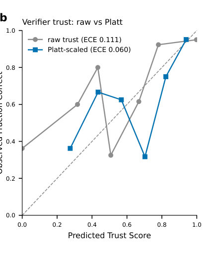
<figcaption class="paper-figure-caption"><b>Fig 3.</b> Figure 3 Two-panel reliability diagram. a, Model verbalized confidence (𝑛= 1,086) vs verifier trust score, raw and uncalibrated (𝑛= 484), each on its own population, with the paired-subset comparison (𝑛= 958); the grounded trust score is the better-calibrated abstention signal on every population (ECE values in text). b, Verifier trust score, raw vs Platt-scaled, on the 𝑛= 484 trust-only holdout.</figcaption>
</figure>
</div>

<p><strong>Summary.</strong> This paper introduces a deterministic, database-grounded verification framework to correct chemical and materials errors generated by large language models. By implementing a gated correction loop, the authors demonstrate superior error reduction compared to standard retrieval methods. They conclude that while repair is effective when an error is found, the primary bottleneck limiting overall accuracy improvement is the model's ability to detect the initial falsehood.</p>
<p><strong>Why it may be interesting.</strong> While not directly quantum physics, this work addresses the reliability of AI tools used to process complex physical data (like material properties), which is crucial for future computational materials science workflows that might incorporate quantum calculations.</p>
<details>
<summary>Detailed structure</summary>
<p><strong>Main problem.</strong> The core challenge is determining whether detection (identifying an error) or repair (correcting the identified error) is the bottleneck when using LLMs for grounded reasoning in chemistry and materials science.</p>
<p><strong>Main result.</strong> Gated, deterministic verification significantly reduces chemical confabulation errors by beating conversational oracle RAG, confirming that the primary limitation is the model's ability to detect an extractable error in the first place.</p>
<p><strong>Method.</strong> The authors developed a tiered verifier that extracts verifiable claims from LLM outputs and checks them against authoritative external databases (e.g., PubChem, Materials Project) within a gated correction loop.</p>
<p><strong>Model / system.</strong> The system involves large language models generating reasoning traces about chemical objects like molecular formulas, space groups, and formation energies in materials science contexts.</p>
<p><strong>Key observables.</strong> Error rates (e.g., 22% down to 4%), detection recall ($r_d$), repair success rate ($r_p$), and the lift achieved by grounding relative to baseline models.</p>
<p><strong>Important parameters / regimes.</strong> The performance is highly dependent on whether the error involves 'long-tail entities' or near-ceiling physical constants, and the comparison between oracle (perfect) vs. realistic retrieval conditions.</p>
<p><strong>Assumptions / limitations.</strong> The analysis assumes that detection failure limits overall improvement, even if the repair mechanism itself is robust when a flag is raised.</p>
<p><strong>Figures summary.</strong> Figures illustrate the method overview showing the 'Verify-and-correct loop' and show error reduction comparisons; other figures compare retrieval savings across different chemical surfaces.</p>
<p><strong>Paper structure.</strong> The paper progresses by first identifying LLM confabulation in chemistry, proposing a gated verification loop, quantifying its performance against various RAG baselines, and finally decomposing the error reduction to prove detection is the bottleneck.</p>
</details>
<details>
<summary>Abstract</summary>
<p>Large language models confabulate chemical objects (molecular formulas, space groups, formation energies) in fluent reasoning traces, concentrated on long-tail entities where confidence is least trustworthy. Deterministic, database-grounded verification can catch and repair such errors without the coverage cost of blanket retrieval; the binding constraint, we find, is detection, not repair. Our tiered verifier extracts each checkable claim, checks it against authoritative databases and physics, and feeds the reference into a gated correction loop. Across four models and 528 condition-pinned prompts, gated correction cuts committed-formula error from 22% to 4% at $3.2\times$ fewer retrievals than blanket augmentation, beating a conversational oracle. Repair succeeds wherever a flag fires (80--97%); the bottleneck is in-loop detection recall. Grounding improves the final answer only when the verifier's scope reaches the deliverable (83% to 90%), and the lift appears only where extractable long-tail error exists: absent on near-ceiling physical constants, large on isotope half-lives (11% to 0%).</p>
</details>
<p><sub><a href="#top">↑ back to top</a></sub></p>

<p><a id="paper-2607.16852"></a></p>
<h3 id="marginal-fermi-liquid-like-behavior-without-pseudogap-in-infinite-layer-nickelates"><a href="http://arxiv.org/abs/2607.16852v1">Marginal-Fermi-Liquid-like Behavior without Pseudogap in Infinite-Layer Nickelates</a></h3>
<p><strong>Authors:</strong> Yu Fan, Zhitong An, Xiang Ding, Xingtian Sun, Yutong Chen, Zhihui Chen, Shenglin Tang, Chihao Li, Jiahao Ye, Timur Kim, Haichao Xu, Rui Peng, Donglai Feng<br>
<strong>Type:</strong> experiment · <strong>Category:</strong> strongly correlated electrons · <strong>PDF:</strong> <a href="https://arxiv.org/pdf/2607.16852v1">https://arxiv.org/pdf/2607.16852v1</a><br>
<strong>Analysis basis:</strong> full PDF text, analyzed in chunks
<strong>Topic relevance:</strong> <code>Keldysh / 2PI / non-Gaussian methods</code> <strong>1/5</strong> · <code>Kondo &amp; dissipative impurity</code> <strong>1/5</strong></p>
<div class="figure-strip-hint">↔ Scroll figures horizontally</div>
<div class="paper-figures-scroll">
<figure class="paper-figure-card">
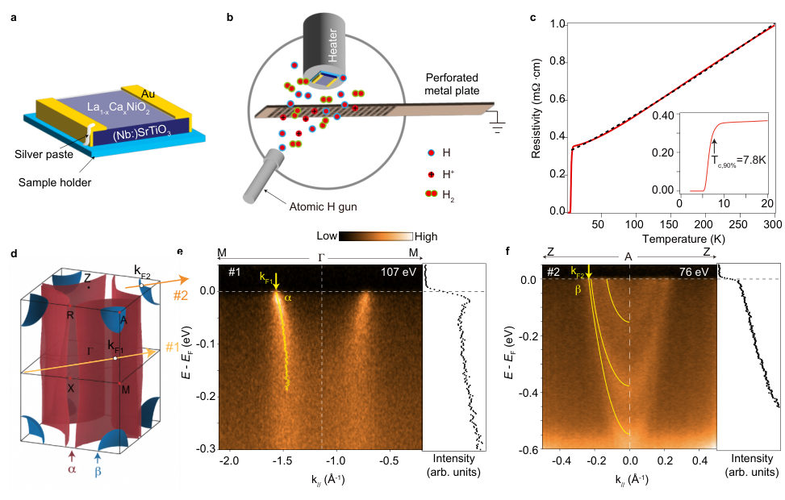
<figcaption class="paper-figure-caption"><b>Fig 1.</b> FIG. 1: Improved surface quality enabling observation of quasiparticle peak in ARPES studies on</figcaption>
</figure>
<figure class="paper-figure-card">
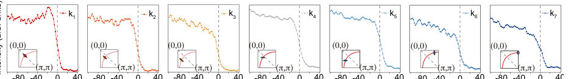
<figcaption class="paper-figure-caption"><b>Fig 2.</b> FIG. 2: Momentum-dependent quasiparticle peak without pseudogap opening in La0.8Ca0.2NiO2. a,b,</figcaption>
</figure>
<figure class="paper-figure-card">
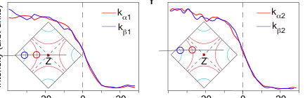
<figcaption class="paper-figure-caption"><b>Fig 3.</b> FIG. 3: Absence of pseudogap opening in the β band in La0.8Ca0.2NiO2. a, Three-dimensional Brillouin</figcaption>
</figure>
<figure class="paper-figure-card">
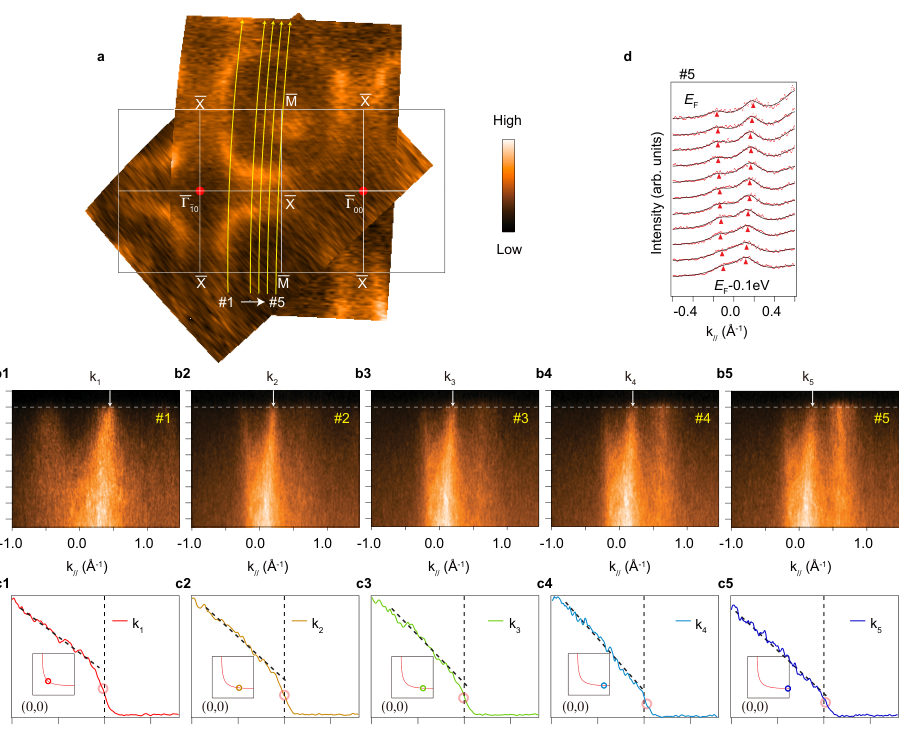
<figcaption class="paper-figure-caption"><b>Fig 4.</b> FIG. 4: Momentum-dependent spectral-weight suppression without pseudogap opening in LaNiO2. a</figcaption>
</figure>
<figure class="paper-figure-card">
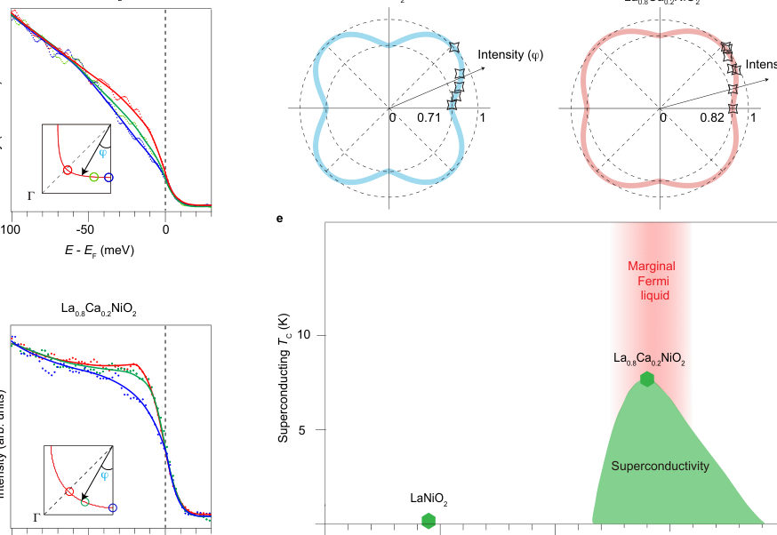
<figcaption class="paper-figure-caption"><b>Fig 5.</b> FIG. 5: Anisotropic spectral weight suppression of La1−xCaxNiO2. a,b, Comparison of EDCs of the α</figcaption>
</figure>
</div>

<p><strong>Summary.</strong> Using ARPES on infinite-layer nickelates, this work investigates whether pseudogap formation is necessary for unconventional superconductivity. The authors report evidence of marginal-Fermi-liquid scattering and momentum-dependent correlations in these materials while definitively showing the absence of a detectable cuprate-like pseudogap opening.</p>
<p><strong>Why it may be interesting.</strong> This work provides crucial experimental data on a different class of strongly correlated superconductors, helping refine theoretical models that attempt to unify the physics governing strange-metal behavior across various high-$T_c$ materials.</p>
<details>
<summary>Detailed structure</summary>
<p><strong>Main problem.</strong> To resolve the relationship between pseudogap formation, strange-metal behavior, and unconventional superconductivity in a system distinct from cuprates.</p>
<p><strong>Main result.</strong> The study found evidence of marginal-Fermi-liquid-like scattering and momentum-dependent correlations in infinite-layer nickelates without observing a detectable cuprate-like pseudogap opening.</p>
<p><strong>Method.</strong> Angle-resolved photoemission spectroscopy (ARPES) was used on superconducting La0.8Ca0.2NiO2 and parent LaNiO2 thin films, supplemented by transport measurements.</p>
<p><strong>Model / system.</strong> The research focuses on infinite-layer nickelates ($    ext{La}_{1-x}   ext{Ca}_x   ext{NiO}_2$), which provide a $3d^9$-derived platform to study high-temperature superconductivity phenomenology, contrasting them with hole-doped cuprates.</p>
<p><strong>Key observables.</strong> Low-energy spectral function, electronic self-energy ($    ext{Im}\Sigma(\omega)$), quasiparticle peak dispersion, and resistivity vs. temperature ($T$).</p>
<p><strong>Important parameters / regimes.</strong> Hole doping level (e.g., $p \sim 0.09$), superconducting transition temperature ($T_c$), and the energy scale of the pseudogap.</p>
<p><strong>Assumptions / limitations.</strong> The analysis assumes that the observed spectral weight suppression is characteristic of marginal-Fermi-liquid behavior, providing a benchmark for understanding normal-state electronic ingredients.</p>
<p><strong>Figures summary.</strong> Figures detail ARPES results showing continuous band dispersion up to $E_F$ and momentum-dependent spectral weight suppression in both doped and parent nickelates, contrasting with expected pseudogap signatures.</p>
<p><strong>Paper structure.</strong> The paper systematically presents ARPES data on the superconducting state ($   ext{La}<em 0.2>{0.8}   ext{Ca}</em>_2$), and concluding with a comparison to cuprate phenomenology.}   ext{NiO}_2$) to establish MFL-like scattering without a gap, followed by analysis of the parent compound ($  ext{LaNiO</p>
</details>
<details>
<summary>Abstract</summary>
<p>Pseudogap formation, strange-metal behavior and unconventional superconductivity are closely intertwined in hole-doped cuprates, yet their relationship remains unresolved. Infinite-layer nickelates offer a distinct 3d9-derived platform to address this question by combining a cuprate-like Ni dx2-y2 Fermi surface with multiband electronic degrees of freedom. Here we use angle-resolved photoemission spectroscopy to resolve the low-energy spectral function of superconducting La0.8Ca0.2NiO2 and parent LaNiO2 thin films. In La0.8Ca0.2NiO2, the electronic self-energy Im Sigma(omega) is approximately linear in energy and its slope increases from (pi/2, pi/2) to (pi, 0), revealing momentum-dependent marginal-Fermi-liquid-like scattering. Both films show a progressive suppression of low-energy spectral weight from the diagonal direction toward (pi, 0), with stronger suppression in parent LaNiO2. However, finite Fermi-level spectral weight persists around the entire Fermi surface, with no leading-edge shift or back-bending indicative of pseudogap formation in either the electron pocket or the cuprate-like hole band. Our results demonstrate that momentum-selective correlations and marginal-Fermi-liquid-like scattering can occur without a detectable cuprate-like pseudogap, providing a benchmark for identifying the essential normal-state electronic ingredients of high-temperature superconductivity.</p>
</details>
<p><sub><a href="#top">↑ back to top</a></sub></p>

<p><a id="paper-2607.16829"></a></p>
<h3 id="shortcuts-to-adiabaticity-in-five-level-systems-using-counter-diabatic-driving-and-time-rescaling-optimization"><a href="http://arxiv.org/abs/2607.16829v1">Shortcuts to adiabaticity in five-level systems using counter-diabatic driving and time-rescaling optimization</a></h3>
<p><strong>Authors:</strong> Jiahui Zhang, Wenyuan Wang, Fuquan Dou<br>
<strong>Type:</strong> theory · <strong>Category:</strong> other · <strong>PDF:</strong> <a href="https://arxiv.org/pdf/2607.16829v1">https://arxiv.org/pdf/2607.16829v1</a><br>
<strong>Analysis basis:</strong> full PDF text, analyzed in chunks
<strong>Topic relevance:</strong> <code>methods for driven-dissipative</code> <strong>1/5</strong> · <code>non-equilibrium dynamics</code> <strong>1/5</strong></p>
<div class="figure-strip-hint">↔ Scroll figures horizontally</div>
<div class="paper-figures-scroll">
<figure class="paper-figure-card">
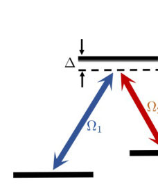
<figcaption class="paper-figure-caption"><b>Fig 1.</b> Figure 1: Schematic of an M-type chainwise-connected five-level system.</figcaption>
</figure>
<figure class="paper-figure-card">

<figcaption class="paper-figure-caption"><b>Fig 2.</b> Figure 2: (Color online) Rabi frequencies (upper row) and populations (lower row) as a function of t; the left and right columns correspond to M-STIRAP and M-STIRSAP, respectively. Adopted Parameters: ω0 =2π×5MHz, tf =1µs, τ = tf/8, σ=tf/6, ∆=2π×5GHz.</figcaption>
</figure>
<figure class="paper-figure-card">

<figcaption class="paper-figure-caption"><b>Fig 3.</b> Figure 3: (Color online) The final population of state |5⟩as functions of param- eter (a) ω0 and (b) tf under the M-STIRAP ang M-STIRSAP, respectively. All the other parameters are the same as those in Fig. 2.</figcaption>
</figure>
<figure class="paper-figure-card">

<figcaption class="paper-figure-caption"><b>Fig 4.</b> Figure 4: (Color online) Rabi frequencies (upper row) and populations (lower row) as a function of t. The left and right columns correspond to a = 2 and a=5, respectively, with all other parameters are the same as those in Fig. 2.</figcaption>
</figure>
<figure class="paper-figure-card">

<figcaption class="paper-figure-caption"><b>Fig 5.</b> Figure 5: (Color online) (a) Population evolution of the intermediate state |3⟩ and the final state |5⟩under the M-STIRSAP-opt protocol when a = 1, 2, 5; (b) Population evolution of the intermediate state |3⟩and the final state |5⟩under the M-STIRSAP protocol for different tf. All other parameters are consistent with those in Fig. 2.</figcaption>
</figure>
</div>

<p><strong>Summary.</strong> The paper addresses the challenge of controlling population transfer in complex five-level quantum systems by applying advanced Shortcuts to Adiabaticity protocols. It introduces a novel, optimized time-rescaling method ($ ext{M-STIRSAP-opt}$) that significantly improves speed and robustness compared to existing methods. This work provides a powerful theoretical framework for realizing fast, high-fidelity quantum state engineering in multi-level atomic or molecular systems.</p>
<p><strong>Why it may be interesting.</strong> This work is highly relevant as it tackles advanced quantum control theory, which is central to designing coherent manipulation of atomic or superconducting qubits in AMO physics settings. The combination of CD driving and TR optimization represents state-of-the-art techniques for fast gate implementation.</p>
<details>
<summary>Detailed structure</summary>
<p><strong>Main problem.</strong> The primary goal is developing fast and robust quantum control protocols for achieving high-fidelity population transfer in complex multi-level quantum systems, specifically five-level chains.</p>
<p><strong>Main result.</strong> The optimized time-rescaling protocol ($   ext{M-STIRSAP-opt}$) was shown to achieve complete population transfer faster and with better robustness against parameter fluctuations compared to previous methods.</p>
<p><strong>Method.</strong> The study employs Shortcuts to Adiabaticity (STA) techniques, combining Counter-diabatic (CD) driving with Time-Rescaling (TR) optimization to engineer the required Hamiltonian dynamics.</p>
<p><strong>Model / system.</strong> The system modeled is a chainwise-connected five-level quantum system. The analysis involves sequential reduction of the full Hamiltonian ($H_5$) down to effective two- and three-level descriptions ($ ilde{H}_2,  ilde{H}_3$).</p>
<p><strong>Key observables.</strong> Final population in the target state $|5\rangle$, transient populations of intermediate states (e.g., $|3\rangle$), and robustness against parameter fluctuations.</p>
<p><strong>Important parameters / regimes.</strong> Rabi frequencies ($\Omega_i(t)$), detuning ($\delta$), time-rescaling parameters ($a$), and evolution time ($t_f$).</p>
<p><strong>Assumptions / limitations.</strong> The initial calculations rely on the Adiabatic Elimination (AE) principle due to computational difficulties in multi-level CD driving.</p>
<p><strong>Figures summary.</strong> Figures illustrate population dynamics comparing different protocols ($    ext{M-STIRAP}$ vs. $    ext{M-STIRSAP}$ vs. $   ext{M-STIRSAP-opt}$) and show the dependence of final state populations on external parameters like detuning or time.</p>
<p><strong>Paper structure.</strong> The paper builds by first establishing the need for STA in multi-level systems, developing protocols via Hamiltonian reduction ($H_5 
ightarrow H_3 
ightarrow H_2$), applying CD driving to create $ ext{M-STIRSAP}$, and finally optimizing this result using Time-Rescaling (TR) to yield the superior $   ext{M-STIRSAP-opt}$ protocol.</p>
</details>
<details>
<summary>Abstract</summary>
<p>Shortcuts to adiabaticity (STA) is a common protocol to realize high-fidelity and robust quantum control in various quantum systems. To date, STA has been widely applied in two- and three-level systems, whereas designing feasible strategies to achieve perfect quantum state engineering in multi-level systems still remains a challenging task. Here, we propose to use counterdiabatic (CD) driving and time-rescaling (TR) methods to construct multi-state stimulated Raman shortcut-to-adiabatic passage protocols for realizing robust and fast population transfer in chainwise-connected five-state systems. The first protocol is implemented by initially reducing the original five-state system to an equivalent two-state counterpart, and then designing the corresponding driving field by combining CD driving and unitary transformation. Further, we introduce the TR method to optimize the first protocol and thus offers an alternative solution. Numerical calculations show that both protocols can achieve complete population transfer and effectively suppress transient populations of all intermediate states. Compared with the first protocol, the optimized second exhibits better performance within a shorter evolution time.</p>
</details>
<p><sub><a href="#top">↑ back to top</a></sub></p>

<p><a id="paper-2607.17465"></a></p>
<h3 id="the-finite-key-effect-of-side-channel-secure-quantum-key-distribution-beyond-post-selection-technique"><a href="http://arxiv.org/abs/2607.17465v1">The finite key effect of side-channel-secure quantum key distribution beyond post-selection technique</a></h3>
<p><strong>Authors:</strong> Cong Jiang, Zong-Wen Yu, Xiang-Bin Wang<br>
<strong>Type:</strong> theory · <strong>Category:</strong> quantum information and computing · <strong>PDF:</strong> <a href="https://arxiv.org/pdf/2607.17465v1">https://arxiv.org/pdf/2607.17465v1</a><br>
<strong>Analysis basis:</strong> full PDF text, analyzed in chunks
<strong>Topic relevance:</strong> <code>entanglement &amp; information structure</code> <strong>1/5</strong> · <code>quantum measurements</code> <strong>1/5</strong></p>
<div class="figure-strip-hint">↔ Scroll figures horizontally</div>
<div class="paper-figures-scroll">
<figure class="paper-figure-card">

<figcaption class="paper-figure-caption"><b>Fig 1.</b> FIG. 1. Comparison of key rates with different N. The curves show the secret key rate (bits per pulse) versus fiber distance (km) for total pulse numbers N = 1011, 1012, and 1014. Our method outperforms prior works, enabling secure QKD at longer distances with fewer pulses.</figcaption>
</figure>
<figure class="paper-figure-card">

<figcaption class="paper-figure-caption"><b>Fig 2.</b> FIG. 2. Comparison of key rates with different ed. The curves show the secret key rate (bits per pulse) versus fiber distance (km) for the misalignment-error probability ed = 3%, 4%, 5%, 6% and 7%. High ed is commonly observed in both deployed field fiber links and free-space channels. The results shows that the maximum transmission distance of the SCS protocol decreases only mildly with increasing ed.</figcaption>
</figure>
</div>

<p><strong>Summary.</strong> This paper presents a security-proof method for variable-length Side-Channel-Secure Quantum Key Distribution (QKD) that bypasses the need for restrictive post-selection techniques. By utilizing Entropic Uncertainty Relations, it derives tight key rates directly from observed statistical fluctuations during error correction. This significantly enhances the practical applicability and theoretical justification of modern QKD protocols.</p>
<p><strong>Why it may be interesting.</strong> This work provides rigorous theoretical advancements in quantum cryptography by developing new methods to calculate secure key rates that are more practical and robust than previous post-selection based approaches.</p>
<details>
<summary>Detailed structure</summary>
<p><strong>Main problem.</strong> Developing a security-proof method for variable-length side-channel-secure (SCS) Quantum Key Distribution (QKD) that avoids the limitations of post-selection techniques.</p>
<p><strong>Main result.</strong> The authors introduce a novel framework using Entropic Uncertainty Relations and the Quantum Leftover Hash Lemma to derive tight, direct key rates for SCS-QKD against coherent attacks.</p>
<p><strong>Method.</strong> The security analysis reframes composable security as a statistical fluctuation problem of phase errors, allowing the calculation of the secure key length based on actual information leakage during error correction.</p>
<p><strong>Model / system.</strong> The study focuses on the Side-Channel-Secure (SCS) QKD protocol, involving two senders (Alice and Bob) transmitting quantum states to an untrusted measurement party Charlie. The analysis also touches upon variable-length BB84 protocols using decoy states.</p>
<p><strong>Key observables.</strong> Phase-error rate, counting rates of distinct quantum states ($
ho_{oA k}, 
ho_{xAk}$), and the final key length $\ell_{i,h}$.</p>
<p><strong>Important parameters / regimes.</strong> The protocol's security is characterized by parameters derived from observed counts and error correction leakage.</p>
<p><strong>Assumptions / limitations.</strong> Initial analysis assumes no bit-dependent correlation between emitted pulses and that Eve cannot enter the laboratory; later sections analyze applicability to broader QKD classes.</p>
<p><strong>Paper structure.</strong> The paper progresses by first introducing the SCS-QKD protocol framework, then detailing the mathematical tools (EUR, QLHL) used for security proofs, and finally extending these techniques to clarify key-rate formulas applicable across various variable-length QKD implementations.</p>
</details>
<details>
<summary>Abstract</summary>
<p>By applying the framework of entropic uncertainty relation (EUR) and the Quantum Leftover Hash Lemma (QLHL), we introduce a security-proof method for variable-length side-channel-secure (SCS) quantum key distribution (QKD) against coherent attacks. This method reframes composable security as a statistical fluctuation problem of phase errors, enabling direct proofs against coherent attacks through observables and virtual observables. It yields tight key rates for the SCS protocol and reduces pulse requirements by over two orders of magnitude compared to prior works that employ the post-selection technique. We prove that the secure key length for the SCS protocol can be determined after error correction by exploiting the fact that untagged bits are free from bit-flip errors, using the actual information leakage during error correction and the post-error-correction statistics of each state to calculate the final key rate. We further identify sufficient conditions under which the final key length may be determined after error correction in a broader class of QKD protocols. Under the framework of EUR and QLHL, we clarify the applicability of several commonly used concentration bounds to variable-length QKD and the appropriate manner of their implementation. This work enhances the practical value of the SCS protocol and clarifies the security justification of key-rate formulas used in practical variable-length QKD implementations.</p>
</details>
<p><sub><a href="#top">↑ back to top</a></sub></p>

<p><a id="paper-2607.16928"></a></p>
<h3 id="a-reponse-to-the-sheldon-goldstein-objection-to-a-series-of-covariant-relativistic-bohmian-models"><a href="http://arxiv.org/abs/2607.16928v1">A Reponse to the Sheldon Goldstein Objection to a Series of Covariant Relativistic Bohmian Models</a></h3>
<p><strong>Authors:</strong> Sergio Hernández-Zapata, Gerardo Ruiz-Chavarría<br>
<strong>Type:</strong> theory · <strong>Category:</strong> other · <strong>PDF:</strong> <a href="https://arxiv.org/pdf/2607.16928v1">https://arxiv.org/pdf/2607.16928v1</a><br>
<strong>Analysis basis:</strong> full PDF text, analyzed in chunks
<strong>Topic relevance:</strong> <code>Keldysh / 2PI / non-Gaussian methods</code> <strong>1/5</strong></p>
<div class="figure-strip-hint">↔ Scroll figures horizontally</div>
<div class="paper-figures-scroll">
<figure class="paper-figure-card">

<figcaption class="paper-figure-caption"><b>Fig 1.</b> Low-resolution page preview, page 2</figcaption>
</figure>
<figure class="paper-figure-card">

<figcaption class="paper-figure-caption"><b>Fig 2.</b> Low-resolution page preview, page 3</figcaption>
</figure>
<figure class="paper-figure-card">

<figcaption class="paper-figure-caption"><b>Fig 3.</b> Low-resolution page preview, page 4</figcaption>
</figure>
<figure class="paper-figure-card">

<figcaption class="paper-figure-caption"><b>Fig 4.</b> Low-resolution page preview, page 5</figcaption>
</figure>
<figure class="paper-figure-card">

<figcaption class="paper-figure-caption"><b>Fig 5.</b> Low-resolution page preview, page 6</figcaption>
</figure>
</div>

<p><strong>Summary.</strong> This paper tackles a fundamental mathematical objection to covariant Bohmian models concerning the normalization of their space-time density. The authors introduce an 'Arrangement Function' as a novel tool to mathematically regularize the theory, allowing for a consistent, Lorentz-covariant description of relativistic quantum dynamics. This resolves a major hurdle in applying Bohmian mechanics to modern field theories.</p>
<p><strong>Why it may be interesting.</strong> While not directly focused on AMO systems like cold atoms or cavity QED, the rigorous development of a consistent quantum mechanical framework (Bohmian Mechanics) for relativistic particles is foundational theoretical work that impacts how one models non-local dynamics in complex quantum systems.</p>
<details>
<summary>Detailed structure</summary>
<p><strong>Main problem.</strong> The primary goal is resolving Sheldon Goldstein's objection regarding the non-integrability of the configuration space-time density in Covariant Bohmian Models, which prevents its normalization to a probability density function.</p>
<p><strong>Main result.</strong> The authors propose using a novel 'Arrangement Function' ($\mathcal{A}$) to construct an integrable framework that allows for Lorentz-covariant descriptions while maintaining mathematical consistency for defining a proper PDF.</p>
<p><strong>Method.</strong> They employ the Arrangement Function to modify continuity equations and guide equations, restricting quantum interactions to be strictly spacelike separations within the formalism.</p>
<p><strong>Model / system.</strong> The work extends Bohmian Mechanics to relativistic quantum field theories (Klein-Gordon and Dirac Equations) in a covariant manner, treating particle paths through space-time density rather than simple foliations.</p>
<p><strong>Key observables.</strong> Space-Time Density ($
ho$), the integral convergence $ar{A}$ (which must be finite), and the resulting Bohmian Guide Equations for particle trajectories.</p>
<p><strong>Important parameters / regimes.</strong> Planck's constant ($\hbar$), speed of light ($c$), and the structure of the Arrangement Function itself, which dictates interaction locality.</p>
<p><strong>Assumptions / limitations.</strong> The necessity of introducing the 'Arrangement Function' to enforce mathematical integrability; assuming quantum interactions are strictly spacelike while classical ones are timelike.</p>
<p><strong>Paper structure.</strong> The paper systematically addresses the Klein-Gordon model, introduces the Arrangement Function for spacelike restriction, tackles Goldstein's objection by ensuring finite integral convergence ($ar{A}$), and concludes with an analysis of the Dirac Equation case.</p>
</details>
<details>
<summary>Abstract</summary>
<p>In this work we try to answer a very important objection to the Covariant Bohmian Models type Nikolić and Hernández-Zapata that was formulated by the american physicist Sheldon Goldstein (private communication, 2010) about the imposibility to interpret the configuration space-time density found by the authors of these models like a probability density. The problem is that it is very dificult to show that the N space-time configuration density has a finite integral. That is very important in order to normalize the density to produce a PDF (probability density function). All the steps in the demonstrations seemed complete but this objection must be resolved imperatively before to continue using this kind of models with full confidence. Since the aim of Bohmian Mechanics (also known as the De Broglie-Bohm Mechanics) is to provide a precise and objective formulation of Quantum Mechanics free from vagueness and obscurity (Bell point of view at least), addressing this issue is crucial. In this article, we set out to tackle this by employing a specific type of function that we call an "Arrangement Function".</p>
</details>
<p><sub><a href="#top">↑ back to top</a></sub></p>

<p><a id="paper-2607.17219"></a></p>
<h3 id="auditing-question-order-effects-in-large-language-models-with-the-qq-equality-mechanism-characterization-and-a-saturation-caveat"><a href="http://arxiv.org/abs/2607.17219v1">Auditing Question-Order Effects in Large Language Models with the QQ Equality: Mechanism Characterization and a Saturation Caveat</a></h3>
<p><strong>Authors:</strong> Pilsung Kang<br>
<strong>Type:</strong> both · <strong>Category:</strong> other · <strong>PDF:</strong> <a href="https://arxiv.org/pdf/2607.17219v1">https://arxiv.org/pdf/2607.17219v1</a><br>
<strong>Analysis basis:</strong> full PDF text, analyzed in chunks
<strong>Topic relevance:</strong> <code>quantum measurements</code> <strong>1/5</strong></p>
<div class="figure-strip-hint">↔ Scroll figures horizontally</div>
<div class="paper-figures-scroll">
<figure class="paper-figure-card">

<figcaption class="paper-figure-caption"><b>Fig 1.</b> Figure 1: Empirical cumulative distribution function (CDF) of the distance from determinism d = 1 −max(p, 1 −p), log scale (d equals the probability of the minority answer, i.e., the total- variation distance to the nearest deterministic distribution). The primary comparison is between the matched eight-item subset under Track M and Track P (96 positions each); the full Track M set is shown as a reference curve. On the matched subset, a similar share of positions lies below the d = 0.01 saturation threshold (78.1% vs 79.2%), indicating that the respondent-persona framing did not substantially alleviate saturation, although the distributions differ at intermediate scales. Positions with d =...</figcaption>
</figure>
<figure class="paper-figure-card">

<figcaption class="paper-figure-caption"><b>Fig 2.</b> Figure 2: Label effect under counterbalancing: per-item qQQ under map-1 vs map-2 (13 A/B items, Track M). Points on the dashed diagonal indicate mapping-invariant behavior; annotated items deviate by more than 0.3, showing that in the saturated regime the A/B token assignment has a substantive effect on the measured qQQ.</figcaption>
</figure>
</div>

<p><strong>Summary.</strong> This work adapts the QQ equality, originally from human survey data, into a rigorous audit tool to test question-order effects in LLMs. The methodology combines theoretical characterization of contextuality with an empirical pipeline that must account for response saturation. Ultimately, it highlights the limitations of using simple next-token probabilities when modeling complex distributional phenomena.</p>
<p><strong>Why it may be interesting.</strong> It provides a novel, physics-inspired statistical framework for auditing complex AI models by mapping their sequential decision-making process onto concepts from quantum information theory (contextuality/order effects).</p>
<details>
<summary>Detailed structure</summary>
<p><strong>Main problem.</strong> The paper audits whether the sequential judgment behavior of autoregressive Large Language Models (LLMs) satisfies the QQ (quantum question) equality, a constraint derived from human survey data.</p>
<p><strong>Main result.</strong> Empirical testing showed that while standard health gates passed, the LLM responses were saturated (near-deterministic), indicating that forced-binary next-token probabilities are inadequate for robust distribution-level audits.</p>
<p><strong>Method.</strong> The authors developed a pre-specified, audit-logged pipeline combining worst-case robustness envelopes, sampling checks, and crucially, a saturation diagnostic to test the QQ equality.</p>
<p><strong>Model / system.</strong> The system under study is an autoregressive LLM whose next-token log-probabilities are treated as synthetic survey response distributions. The theoretical framework draws parallels with projective quantum measurement models.</p>
<p><strong>Key observables.</strong> The primary observable is the $    ext{qQQ}$ equality, which quantifies question-order effects (QOE) in sequential judgments; contextuality is assessed via the CbD criterion ($\Gamma$).</p>
<p><strong>Important parameters / regimes.</strong> Saturation threshold (e.g., $>0.99$ probability), and the specific structure of the LLM's next-token log-probabilities.</p>
<p><strong>Assumptions / limitations.</strong> The core assumption is treating LLM next-token probabilities as genuine survey response distributions, which requires a saturation diagnostic to validate.</p>
<p><strong>Figures summary.</strong> Not specified in detail, but the notes reference tables summarizing 18 frozen question pairs and their mapping/set types.</p>
<p><strong>Paper structure.</strong> The paper moves from establishing the theoretical basis of the QQ equality derived from human data, through characterizing mechanism classes that satisfy it (e.g., marginal-independent kernels), to developing a rigorous audit pipeline, and concluding with an empirical pilot demonstrating diagnostic limitations.</p>
</details>
<details>
<summary>Abstract</summary>
<p>Human survey respondents exhibit question-order effects that satisfy the QQ (quantum question) equality, an a priori, parameter-free prediction of the projective quantum question-order model. We develop the QQ equality into an audit criterion for sequential judgments of autoregressive large language models (LLMs). Theoretically, we characterize which mechanism classes satisfy it robustly: marginal-independent kernels satisfy QQ iff all four mismatch transition rates coincide (a class containing the 2D rank-1 projective model with a fixed measurement pair under state variation); a polarity- and position-dependent repetition family is characterized by an exact cross-symmetry condition with closed-form violations; QQ-satisfying behaviors are closed under order-matched mixing; and the rank-2 Contextuality-by-Default criterion translates into audit coordinates as $|\qQQ|\le\OSS$, where $\OSS$ (the order-sensitivity score) totals the order sensitivity of the two marginals. Methodologically, we develop a pre-specified, audit-logged pipeline applicable to any model exposing next-token log-probabilities; it combines worst-case robustness envelopes, sampling-consistency spot checks, full label counterbalancing, and a saturation diagnostic. Empirically, in a first-signal pilot on an open-weight instruction-tuned model under two framings, all pre-specified health gates passed, yet 17/18 and 7/8 item pairs, respectively, were saturated (near-deterministic), and no item was certified residually contextual. Forced-binary next-token log-probabilities were thus inadequate for distribution-level QQ audits under the tested model and prompting conditions; we recommend pre-specified saturation diagnostics whenever next-token distributions are treated as survey-response distributions.</p>
</details>
<p><sub><a href="#top">↑ back to top</a></sub></p>

<p><a id="paper-2607.16765"></a></p>
<h3 id="extending-the-frontiers-of-qnlp-beyond-english-grammar-sensitive-pipeline-for-hindi-sentiment-classification-using-compositional-quantum-models"><a href="http://arxiv.org/abs/2607.16765v1">Extending the Frontiers of QNLP Beyond English: Grammar-Sensitive Pipeline for Hindi Sentiment Classification Using Compositional Quantum Models</a></h3>
<p><strong>Authors:</strong> Gautami Sanjay Naik, Rishi Koushik Reddy Thippireddy, Naman Srivastava, Parishri Shah, Ravi Raj, Sunil Saumya, Aswath Babu H<br>
<strong>Type:</strong> theory · <strong>Category:</strong> other · <strong>PDF:</strong> <a href="https://arxiv.org/pdf/2607.16765v1">https://arxiv.org/pdf/2607.16765v1</a><br>
<strong>Analysis basis:</strong> full PDF text, analyzed in chunks
<strong>Topic relevance:</strong> <code>entanglement &amp; information structure</code> <strong>1/5</strong></p>
<div class="figure-strip-hint">↔ Scroll figures horizontally</div>
<div class="paper-figures-scroll">
<figure class="paper-figure-card">

<figcaption class="paper-figure-caption"><b>Fig 1.</b> Fig. 1. Lambeq Pipeline</figcaption>
</figure>
<figure class="paper-figure-card">

<figcaption class="paper-figure-caption"><b>Fig 2.</b> Fig. 4. Quantum Circuit. Note: Labels like π13, τ21 are generated from the Lambeq code, and appear here as pi_13 and tau_21, same is with other labels.</figcaption>
</figure>
<figure class="paper-figure-card">

<figcaption class="paper-figure-caption"><b>Fig 3.</b> Fig. 5. Ternary Class Classification. Left: Accuracy Vs Epoch, Right: Loss Vs Epoch.</figcaption>
</figure>
<figure class="paper-figure-card">

<figcaption class="paper-figure-caption"><b>Fig 4.</b> Fig. 6. Binary Class Classification. Left: Accuracy Vs Epoch, Right: Loss Vs Epoch.</figcaption>
</figure>
</div>

<p><strong>Summary.</strong> This paper introduces a grammar-aware Quantum Natural Language Processing (QNLP) pipeline designed to classify sentiment in Hindi, moving beyond English limitations. It translates the complex syntax of Hindi into quantum circuits using pregroup grammars and trains a Hybrid Quantum Neural Network. The work demonstrates that compositional QNLP can successfully tackle morphologically rich, non-English languages.</p>
<p><strong>Why it may be interesting.</strong> While not directly about physical quantum systems, the use of quantum circuits to encode complex structural information (grammar) provides an interesting analogy for how entanglement might capture non-local or compositional dependencies in highly structured data, relevant to quantum machine learning theory.</p>
<details>
<summary>Detailed structure</summary>
<p><strong>Main problem.</strong> The core problem is extending Quantum Natural Language Processing (QNLP) from English to typologically diverse, morphologically rich languages like Hindi for sentiment classification.</p>
<p><strong>Main result.</strong> The authors demonstrated effective sentiment classification on Hindi using their grammar-aware QNLP pipeline, showing the potential of compositional quantum models for non-English languages.</p>
<p><strong>Method.</strong> They developed a novel, negation-aware pregroup grammar to encode Hindi sentences, which are then processed by Lambeq into string diagrams and subsequently converted into parameterized quantum circuits (PQC).</p>
<p><strong>Model / system.</strong> The model is a Hybrid Quantum Neural Network (HQNN) that uses the IQP ansatz. The physical system involves mapping grammatical structures onto quantum states via tensor products, implemented through qubits and entangling gates.</p>
<p><strong>Key observables.</strong> Sentiment classification accuracy (%) for ternary (positive/negative/neutral) and binary tasks.</p>
<p><strong>Important parameters / regimes.</strong> Trainable parameters ($ heta_i$) within the parameterized quantum circuits; data split ratios (e.g., 80:10:10).</p>
<p><strong>Assumptions / limitations.</strong> The model is a proof-of-concept limited by small dataset size and relies on simulating quantum circuits rather than running on actual NISQ hardware.</p>
<p><strong>Figures summary.</strong> Figures illustrate the pipeline stages (Sentence -&gt; String Diagram -&gt; PQC) and show performance plots (Accuracy vs. Epoch, Loss vs. Epoch) for both binary and ternary classification tasks.</p>
<p><strong>Paper structure.</strong> The paper establishes the linguistic gap (English bias in QNLP), proposes a grammar-aware framework using pregroup grammars for Hindi, details the pipeline stages (Lambeq $
ightarrow$ String Diagram $
ightarrow$ PQC $
ightarrow$ HQNN training), presents results on sentiment classification, and concludes with limitations.</p>
</details>
<details>
<summary>Abstract</summary>
<p>Advancements in Natural Language Processing (NLP), whether on classical or quantum platforms, have predominantly focused on English due to its widespread use and abundant linguistic resources. Although English remains the most studied language in computational linguistics, Hindi, the third most spoken language worldwide after Mandarin, has received comparatively limited attention. Spoken primarily in India, Hindi differs significantly from English in its script, syntactic structure, and linguistic characteristics. Hindi uses the Devanagari script, exhibits rich morphological inflection, and follows a subject-object-verb (SOV) word order, unlike English's subject-verb-object (SVO) structure. Motivated by Hindi's linguistic complexity and its underrepresentation in Quantum Natural Language Processing (QNLP), we propose a grammar-aware QNLP pipeline for Hindi sentiment classification with a focus on sentential negation. We use a manually annotated Hindi sentiment dataset labeled as positive, negative, or neutral, and encode sentences using pregroup grammar types. Sentences are processed with Lambeq to generate quantum circuits using a novel negation-aware compositional grammar. Hybrid Quantum Neural Networks (HQNNs) are trained for both binary and ternary sentiment classification. Our results demonstrate effective sentiment classification and highlight the potential of compositional QNLP for morphologically rich languages.</p>
</details>
<p><sub><a href="#top">↑ back to top</a></sub></p>

<p><a id="paper-2607.17960"></a></p>
<h3 id="fixed-point-exploration-for-cv-qkd-ir-qc-met-ldpc-toward-hardware-implementation"><a href="http://arxiv.org/abs/2607.17960v1">Fixed Point Exploration For CV-QKD IR QC-MET-LDPC Toward Hardware Implementation</a></h3>
<p><strong>Authors:</strong> Guilherme Vergne de Oliveira, Mauro Queiroz Nooblath Neto, Micael Andrade Dias, Francisco Revson Fernandes Pereira, Francisco Marcos de Assis, Valéria Loureiro da Silva, Nelson Alves Ferreira<br>
<strong>Type:</strong> theory · <strong>Category:</strong> quantum information and computing · <strong>PDF:</strong> <a href="https://arxiv.org/pdf/2607.17960v1">https://arxiv.org/pdf/2607.17960v1</a><br>
<strong>Analysis basis:</strong> full PDF text, analyzed in chunks
<strong>Topic relevance:</strong> <code>methods for driven-dissipative</code> <strong>1/5</strong></p>
<div class="figure-strip-hint">↔ Scroll figures horizontally</div>
<div class="paper-figures-scroll">
<figure class="paper-figure-card">

<figcaption class="paper-figure-caption"><b>Fig 1.</b> Fig. 1 BIT ERROR RATE (FER) AS A FUNCTION OF SNR FOR DIFFERENT</figcaption>
</figure>
<figure class="paper-figure-card">

<figcaption class="paper-figure-caption"><b>Fig 2.</b> Fig. 3 BIT ERROR RATE (FER) AS A FUNCTION OF SNR FOR DIFFERENT</figcaption>
</figure>
<figure class="paper-figure-card">

<figcaption class="paper-figure-caption"><b>Fig 3.</b> Fig. 4 BIT ERROR RATE (FER) AS A FUNCTION OF SNR FOR DIFFERENT</figcaption>
</figure>
<figure class="paper-figure-card">

<figcaption class="paper-figure-caption"><b>Fig 4.</b> Fig. 2 BIT ERROR RATE (FER) AS A FUNCTION OF SNR FOR DIFFERENT</figcaption>
</figure>
</div>

<p><strong>Summary.</strong> This paper addresses the computational bottleneck in CV-QKD by comparing three iterative decoding algorithms—SPA, MSA, and NMS—under strict fixed-point arithmetic constraints. By simulating performance across various precisions at low SNR, the authors determined that SPA provides the most reliable results, recommending a specific Q8.4 format for practical hardware deployment.</p>
<p><strong>Why it may be interesting.</strong> While focused on classical coding theory applied to quantum communication, the explicit analysis of numerical precision limitations (fixed-point arithmetic) is highly relevant for designing resource-constrained quantum hardware accelerators.</p>
<details>
<summary>Detailed structure</summary>
<p><strong>Main problem.</strong> High-speed LDPC decoding is a major bottleneck for practical Continuous-Variable Quantum Key Distribution (CV-QKD), requiring efficient hardware acceleration.</p>
<p><strong>Main result.</strong> The Sum-Product Algorithm (SPA) demonstrated the best overall performance, while SPA using Q8.4 precision offered the optimal balance between reliability and hardware efficiency for large-scale implementation.</p>
<p><strong>Method.</strong> A comparative analysis was performed on three message-passing decoding algorithms (SPA, MSA, NMS) within a unified fixed-point arithmetic framework.</p>
<p><strong>Model / system.</strong> The study models the error correction process using LDPC codes applied to CV-QKD reconciliation at very low Signal-to-Noise Ratios (SNR). The core mathematical tool is the quantization of real values into fixed-point representations.</p>
<p><strong>Key observables.</strong> Frame Error Rate (FER) and average number of decoding iterations ($ar{I}$).</p>
<p><strong>Important parameters / regimes.</strong> Fixed-point precision (e.g., Q8.4, Q16.8), Signal-to-Noise Ratio (SNR $\le 0$ dB).</p>
<p><strong>Assumptions / limitations.</strong> The fixed-point model abstracts constraints expected in future hardware realization, such as those on FPGAs.</p>
<p><strong>Figures summary.</strong> Figures compare FER vs. SNR curves for different decoders and precisions, illustrating SPA's superior robustness across varying numerical formats.</p>
<p><strong>Paper structure.</strong> The paper introduces the necessity of LDPC codes for CV-QKD hardware acceleration, details the unified fixed-point decoding framework, and concludes with a comparative evaluation of SPA, MSA, and NMS performance metrics.</p>
</details>
<details>
<summary>Abstract</summary>
<p>High-speed LDPC decoding is a major bottleneck in CV-QKD and motivates hardware acceleration with fixed-point arithmetic. This work compares SPA, MSA, and NMS under a unified low-SNR fixed-point framework using common graph, matrix, and quantization settings. Multiple formats are evaluated through FER, and average iterations. The results show that performance depends strongly on the interaction between decoder rule and numerical precision. SPA achieved the best overall performance. For reduced-complexity decoders, Q16.8 was the lowest consistent precision, with NMS outperforming MSA. Practically, SPA with Q8.4 offered the best balance between reliability and hardware efficiency for large-scale implementations.</p>
</details>
<p><sub><a href="#top">↑ back to top</a></sub></p>

<p><a id="paper-2607.16871"></a></p>
<h3 id="point-group-equivariant-graph-neural-networks-for-materials"><a href="http://arxiv.org/abs/2607.16871v1">Point Group Equivariant Graph Neural Networks for Materials</a></h3>
<p><strong>Authors:</strong> Alexander J. Heilman, Qimin Yan<br>
<strong>Type:</strong> theory · <strong>Category:</strong> disordered systems and neural networks · <strong>PDF:</strong> <a href="https://arxiv.org/pdf/2607.16871v1">https://arxiv.org/pdf/2607.16871v1</a><br>
<strong>Analysis basis:</strong> full PDF text, analyzed in chunks
<strong>Topic relevance:</strong> <code>analog quantum simulation</code> <strong>1/5</strong></p>
<div class="figure-strip-hint">↔ Scroll figures horizontally</div>
<div class="paper-figures-scroll">
<figure class="paper-figure-card">

<figcaption class="paper-figure-caption"><b>Fig 1.</b> Figure 1: Symmetry-labelled subspaces of MoS2 and it’s corresponding Wyckoff graph. In the present work, symmetric sites are mapped onto one node representing their Wyckoff position in a reduced Wyckoff graph. The central molybdenum sites of the material molybdenum disulfide have D6h symmetry, which may be used to partition the full 3D space into a 2D symmetry plane labelled by the IR E, and a trivial axis labelled by the IR A1. Here, F is an equivariant filter function composed of the product of a point group harmonic H and a learnable radial expansion function F(r) that takes only interatomic distance as argument (as in [9]). The feature vector v is updated by it’s neighbor via a...</figcaption>
</figure>
<figure class="paper-figure-card">

<figcaption class="paper-figure-caption"><b>Fig 2.</b> Figure 2: (a) Workflow for the results presented in this paper. Materials’ axis alignment with a standard canonical frame for the materials given point group is performed so that IR labels are appropriately applied. These then are fed into either a standard invariant model (as in [16]), a full SO(3) equivariant model, and a specific, point group (PG) symmetry aware model. These are then used to predict the same sets of target tensors and results are compared. Note that the point group aware model may attribute weights to specific subspace within rotational orders ℓthat full rotationally equivariant models cannot, only being able to specify up to ℓ. (b) Heatmaps showing the Root Mean Squared...</figcaption>
</figure>
<figure class="paper-figure-card">

<figcaption class="paper-figure-caption"><b>Fig 3.</b> Figure 3: Point Group Equivariant Model Architecture. Schematic depicting architecture of equiv- ariant models depicted in this work. Atomic embeddings follow that used in CGCNN [4] for the scalar block, while edge embeddings are a gaussian expansion of distance with dimension equal to block size. For each convolutional block, a radial filter function is evaluated for the edge feature, self interaction is applied to the incoming node features, the decomposed tensor product is then summed with these node features, after which scalar gating between the scalar (ℓ= 0) block and each higher-order block, after which every block is independently normalized and scaled by learned weights. This is...</figcaption>
</figure>
<figure class="paper-figure-card">

<figcaption class="paper-figure-caption"><b>Fig 4.</b> Figure 4: Schematic of the synthetic D4h vector-orientation task. Vector node features are either uniformly along the A2u principal axis or uniformly in the Eu symmetry plane. The SO(3)-equivariant network, weighting the ℓ= 1 block as a whole, has no channel that separates the two cases; the PG-partitioned network distinguishes them by routing through separate A2u and Eu weight paths.</figcaption>
</figure>
</div>

<p><strong>Summary.</strong> This work introduces Point Group Equivariant GNNs (PGEqNN) to enhance material property prediction by leveraging the specific symmetry constraints of crystal point groups. By restricting network operations to these discrete symmetries, the authors show that simpler, $A_1$-restricted models can achieve comparable or better accuracy than complex full-symmetry models using fewer parameters. This represents a significant step toward building leaner, more physically accurate machine learning potentials for condensed matter systems.</p>
<p><strong>Why it may be interesting.</strong> While focused on solid-state physics, the rigorous mathematical framework of enforcing discrete group symmetries ($  ext{Point Group}$) into a continuous ML architecture is highly relevant for developing physically constrained models in quantum simulation or AMO theory.</p>
<details>
<summary>Detailed structure</summary>
<p><strong>Main problem.</strong> The goal is to improve equivariant Graph Neural Networks (GNNs) for predicting material properties by incorporating the specific symmetries of the crystal point group, going beyond general $O(3)$ equivariance.</p>
<p><strong>Main result.</strong> An $A_1$-restricted variant of the network can match or exceed the performance of full point-group and $SO(3)$-partitioned models while requiring significantly fewer active parameters, demonstrating that predictive power is concentrated in trivial subspaces.</p>
<p><strong>Method.</strong> The authors introduce Point Group Equivariant GNNs (PGEqNN) by partitioning filter functions based on both rotational irreducible representations ($SO(3)$) and the specific point group irreducible representations ($\alpha$).</p>
<p><strong>Model / system.</strong> The system studied is crystalline materials, represented as graphs where nodes are atomic sites. The model predicts tensorial properties like elastic and dielectric tensors.</p>
<p><strong>Key observables.</strong> Mean Absolute Error (MAE) for harmonic components of the dielectric tensor; active parameter count.</p>
<p><strong>Important parameters / regimes.</strong> Point group symmetry labels ($\alpha$ index); rotational order ($\ell$).</p>
<p><strong>Assumptions / limitations.</strong> The primary assumption is that crystal properties tensors are largely constrained to the trivial irreducible representation subspace according to Neumann's principle, allowing for simplification.</p>
<p><strong>Figures summary.</strong> Figures illustrate the mapping of symmetric sites onto Wyckoff graphs and compare prediction workflows between invariant, full $SO(3)$ equivariant, and point group aware models.</p>
<p><strong>Paper structure.</strong> The paper builds upon standard GNN message passing by adapting it to respect specific point-group symmetries. It compares performance across different symmetry partitions (full PG vs. A1-only) using established tensorial datasets.</p>
</details>
<details>
<summary>Abstract</summary>
<p>Equivariant graph neural networks have proven effective tools for inference of material's properties directly from their structure. Traditionally, these have been applied such that they respect full $O(3)$ equivariance, so that any rotation or reflection of the input structure is respected in the model's output. While this works for general arrangements of atoms, additional symmetries of atomistic systems are left unleveraged. Furthermore, any symmetries of the filter functions are implicitly learned from the full dataset and not strictly enforced. In this work, we introduce point-group symmetry aware equivariant graph neural networks (PGEqNN) for materials science, with filter functions aligned with symmetry-aware indices for greater granularity in predictive tasks. With this architecture, we show that most of the predictive power of equivariant networks for tensorial elastic and dielectric datasets lies in the trivial subspaces of the point-group adapted bases. Exploiting this, an $A_1$-restricted variant matches or improves on its full point-group and $SO(3)$-partitioned counterparts while training fewer active parameters, yielding leaner models of equal accuracy.</p>
</details>
<p><sub><a href="#top">↑ back to top</a></sub></p>
<hr>
<p>
<a href="index.html">← Index</a>
 · <a href="papers_06.html">← Previous</a> · <a href="papers_08.html">Next →</a>
</p>
<hr>

</body>
</html>
